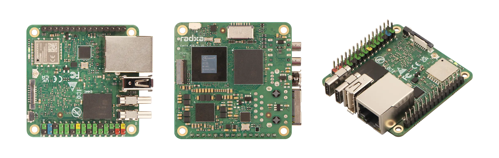
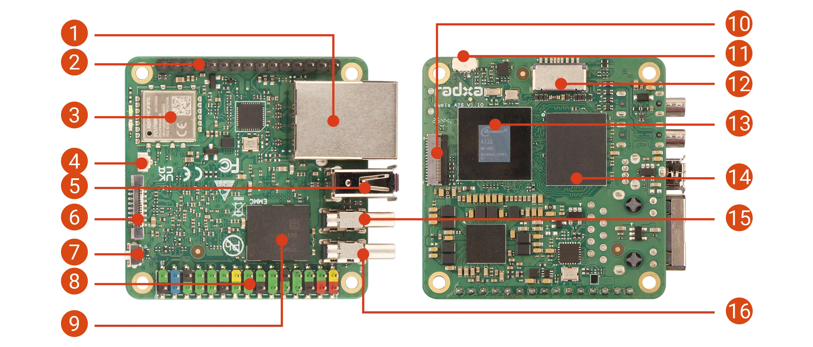
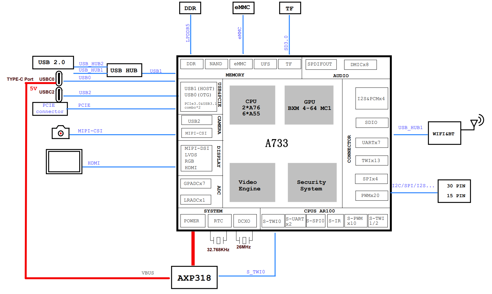

Cubie A7S 移动操作机器人
开发手册
以 Radxa Cubie A7S（6GB）单板计算机为核心，覆盖主板外观与接口、硬件能力评估、ROS 2 多节点软件架构、硬件采买清单、 系统部署与整机装配、仿真与 Sim2Real 验证、底盘运动控制、NPU 视觉推理、离线语音助手、机械臂集成、 人物跟踪与避让、导航与建图、标定与调参、并行调度与电源散热、系统集成与网络安全、故障排查与维护、 量产、合规与认证，以及功能扩展与资源预算的完整工程指南。
01项目蓝图与硬件能力总览
本项目目标是构建一台具备自主移动、视觉感知、语音交互与物体抓取能力的 移动操作机器人（Mobile Manipulator）。核心计算平台选用 Radxa Cubie A7S（6GB 内存版）， 其搭载的全志 A733 SoC 在 51mm × 51mm 的紧凑板型上集成了八核 CPU、3 TOPS NPU、 GPU 与 RISC-V 实时协处理器，单板即可覆盖本项目的全部计算需求，无需外挂算力棒或上位机。[1][7]
1.1核心规格
| 子系统 | 规格 | 在本项目中的角色 |
|---|---|---|
| SoC | Allwinner A733，2× Cortex-A76 @ 2.0GHz + 6× Cortex-A55 | ROS 2 节点调度、路径决策、任务编排 |
| NPU | Vivante VIP9000，3 TOPS @ INT8（支持 INT4/8/16、FP16/BF16） | YOLO 目标检测、KWS/ASR/声码器加速 |
| GPU | Imagination BXM-4-64 | 图像预处理/显示（备用算力） |
| MCU（SoC 内置） | RISC-V 玄铁 E902 @ 200MHz | 厂商固件占用，本项目不使用（无官方用户编程路径，见 6.1） |
| 实时协处理器 | RP2040（Raspberry Pi Pico 等）外挂 MCU，UART 接入 | 电机 PWM 闭环、编码器计数等硬实时任务 |
| 内存 | 6GB LPDDR5（最高支持 16GB） | ROS 2 + 推理 + 语音三负载并行 |
| 存储 | microSD + 可选 eMMC；FPC 引出 PCIe 3.0 x1（可扩 NVMe SSD） | 系统与模型文件存储 |
| 相机接口 | MIPI CSI 4-lane（31-pin 0.3mm FPC） | 视觉采集主通道 |
| GPIO | 30-pin + 15-pin 排针：多路 TWI(I2C)/UART/SPI/PWM | 舵机驱动板、电机驱动、传感器扩展 |
| 网络 | 千兆以太网 + WiFi 6 + BT 5.4 | 远程调试、OTA、上位机可视化 |
| USB / 显示 | USB-C2（USB 3.2 + DP Alt + OTG）、USB-C1（供电 + OTG）、USB-A 2.0 | 外设扩展与调试 |
| 风扇接口 | 3-Pin 5V 风扇座（PJ27_PWM1-9 支持 PWM 调速） | 主动散热，PWM 温控调速 |
1.2主板外观、接口与系统框图
Cubie A7S 是一块 51mm × 51mm 的口袋级单板，尺寸与树莓派 Zero 相近，可直接固定在机器人底盘上层。 下图为官方正 / 背 / 侧三视图，先建立对板型的直观印象：

主板正面四周布置了本项目要用到的全部接口。先认位置、再接线，下图标出了 16 处关键接口 / 元件（编号对应表 1-2）：

| # | 接口 / 元件 | 本项目用途 | # | 接口 / 元件 | 本项目用途 |
|---|---|---|---|---|---|
| 1 | 千兆以太网 | 有线调试 / 上位机联调 | 9 | 板载 eMMC（可选） | 系统盘（选配版本） |
| 2 | 15-Pin GPIO 排针 | PWM / UART 扩展 | 10 | MIPI CSI 摄像头 | IMX219 视觉采集（需 AC008 转接） |
| 3 | Wi-Fi 6 & BT5.4 模组 | 无线调试 / OTA | 11 | 风扇接口（3-Pin） | 主动散热，PWM 温控调速 |
| 4 | 天线座 | 随机附赠天线 | 12 | microSD 卡槽 | 系统盘（推荐 ≥32GB） |
| 5 | USB 2.0 Type-A | USB 麦克风 / 声卡 / 雷达 | 13 | 全志 A733 SoC | 主控（CPU / NPU / GPU） |
| 6 | FPC 接口（PCIe 3.0 x1） | 扩展 NVMe SSD | 14 | LPDDR5 | 6GB 内存 |
| 7 | USB BOOT 按键 | FEL 模式刷机 / 修复 | 15 | USB-C2（3.2 + DP Alt + OTG） | 外设 / 显示输出 |
| 8 | 30-Pin GPIO 排针 | TWI(I2C) 接 PCA9685 舵机板 | 16 | USB-C1（5V 供电 + OTG） | 板载供电入口 |
本项目实际只用到三处排针 / 座：30-Pin 排针（I2C 舵机板）、15-Pin 排针（PWM / UART）、3-Pin 风扇座；其余均为 USB 与 FPC。完整引脚定义见附录 B，通电前务必对照丝印确认引脚顺序。
下图给出 A733 的内部框图，帮助理解 CPU、NPU、GPU、内存与外设之间的连接关系：

1.3能力评估：A733 是否够用？
结论是完全够用，且有明确冗余。算力分配如下： 视觉检测、唤醒词与语音识别由 3 TOPS NPU 承担（INT8 精度下足以实时运行 YOLO11 级别模型）； ROS 2 节点图、状态机与决策逻辑由双核 A76 + 六核 A55 承担；Matcha TTS 的文本前端等轻量 CPU 任务穿插运行。 硬实时电机闭环则外挂一颗 RP2040 微控制器专职负责——A733 内置的 E902 由厂商固件占用、无官方用户编程路径，不适合承担此任务（详见 6.1）。 6GB LPDDR5 保证了三个负载域（ROS、视觉、语音）可同时驻留内存，模型切换无需重启进程。
算力分区是本手册的核心思想：让每类任务运行在最合适的计算单元上。硬实时交给外挂 MCU，神经网络交给 NPU，通用逻辑交给 CPU，互不抢占，系统自然稳定。
02系统总体架构
软件采用 ROS 2 多节点模块化架构：每个功能（运动、视觉、语音、机械臂、导航、决策）是独立节点， 节点之间通过话题（Topic）发布/订阅解耦。这样做在 6GB 内存的嵌入式平台上有三个直接收益： 单个节点崩溃不影响全局；可按需启停节点以配合 NPU 模型切换（见第 13 章）；每个节点可独立调试与替换。
2.1分层架构
flowchart TB
subgraph L4["决策层 (CPU · A76)"]
SM["任务状态机节点
mission_manager"]
TRACK["跟踪避让决策节点
follow_avoid_node"]
end
subgraph L3["感知层 (NPU + CPU)"]
VISION["视觉推理节点
yolo_npu_node"]
VOICE["语音助手节点
voice_assistant_node"]
end
subgraph L2["控制层"]
ARM["机械臂控制节点
arm_controller"]
BASE["底盘控制节点
base_controller"]
end
subgraph L1["硬件抽象层"]
CAM["MIPI CSI 相机"]
MIC["USB 麦克风 / USB 声卡"]
PCA["PCA9685 舵机驱动板 (I2C)"]
MCU["RP2040 实时协处理器 (UART)"]
MOTOR["L298N 电机驱动"]
SERVO["舵机×N (机械臂)"]
WHEEL["直流减速电机×2"]
end
CAM --> VISION
MIC --> VOICE
VISION -- "/detections" --> TRACK
VOICE -- "/voice_command" --> SM
TRACK -- "/cmd_vel" --> BASE
SM -- "/joint_commands" --> ARM
SM -- "/cmd_vel" --> BASE
BASE -- UART 串口协议 --> MCU
MCU --> MOTOR --> WHEEL
ARM -- I2C --> PCA --> SERVO
2.2ROS 2 节点与话题拓扑
flowchart LR
subgraph nodes["ROS 2 节点图"]
direction TB
N1["camera_driver
相机驱动节点"]
N2["yolo_npu_node
视觉推理"]
N3["voice_assistant_node
离线语音"]
N4["follow_avoid_node
跟踪/避让"]
N5["mission_manager
任务状态机"]
N6["base_controller
底盘控制"]
N7["arm_controller
机械臂控制"]
end
N1 -- "/image_raw
(sensor_msgs/Image)" --> N2
N2 -- "/detections
(自定义 DetectionArray)" --> N4
N3 -- "/voice_command
(std_msgs/String)" --> N5
N4 -- "/cmd_vel
(geometry_msgs/Twist)" --> N6
N5 -- "/cmd_vel" --> N6
N5 -- "/joint_commands
(自定义 JointCommand)" --> N7
N2 -- "/detections" --> N5
所有自定义消息集中在 robot_msgs 功能包；节点名、话题名一律小写下划线；QoS 对 /image_raw 使用 best_effort（允许丢帧保实时），对指令类话题使用 reliable。节点进程按第 13 章的调度策略绑定 CPU 核。
2.3系统与软件环境准备
复刻第一步是把系统跑起来。Cubie A7S 官方支持 Debian（Radxa OS）、Buildroot、Tina Linux，推荐 Radxa OS（Debian 桌面版）。 写镜像、登录、装 ROS 2 三步如下：
# 1) 用 balenaEtcher / rpi-imager 将 Radxa OS 镜像写入 microSD（≥32GB，A2 U3）
# 2) 插卡上电，首次登录（Radxa OS 默认账号）
# 用户名 radxa 密码 radxa
# 3) 更新并安装 ROS 2（A7S 官方在 Humble 上验证）
sudo apt update && sudo apt upgrade -y
sudo apt install ros-humble-desktop-full ros-dev-tools -y
echo "source /opt/ros/humble/setup.bash" >> ~/.bashrc
source ~/.bashrc && ros2 topic list # 验证环境A7S 官方 ROS 2 方案为 ROS 2 Humble（apt 直接安装），不要照搬其他平台的 Jazzy 教程。[9]外设启用：用 rsetup 或设备树 overlay 打开所需的 I2C（TWI）总线与 PWM 通道；GPIO 编程用 libgpiod（sudo apt install gpiod python3-libgpiod）。
03硬件采买任务清单
开工前先备料。本章给出整机方案的完整采买清单（BOM），选型原则是 经济实惠、耐用、易替换。清单按功能模块分组，标注数量、参考单价与优先级， 可直接作为下单核对表逐项打勾。整机物料总预算约 ¥2,223（含可选件；若去掉 P2 可选件约 ¥2,195；2026-10-18 实采价格，逐项出处见各表）。
建议在动手前先完成采买——主板与工具到货后即可边装系统边等其余物料， 各阶段物料按 3.9 的分批计划下单，与后续开发里程碑一一对齐。
3.1采买三原则
- 核心不省：主板、电池、电源模块、舵机是故障代价最高的四类部件。宁可多花几十元买大余量、买正规货，也不因小失大——一次烧毁主板或电机堵转烧舵机的损失，远超当初省下的差价。
- 机械优先金属：底盘、机械臂结构件、舵机齿轮一律选金属件。塑料件在反复受力后断裂或打滑，返工的时间成本远高于差价。
- 外围走通用：线材、连接件、支架、工具使用量大低价的通用件即可——好买、好换、可跨项目复用。
下表单价为2026-10-18 逐项实采的真实电商价格（人民币），并在每个价格下标注出处（平台 · 店铺）。说明：京东与淘宝的搜索页对脚本访问强制登录，价格取自各平台公开商品页与搜索结果快照——标品优先取京东自营 / 品牌官网，电子小件多为淘宝 / 天猫 / 1688 主流成交价；实付可能随促销浮动 ±20%，请以下单时页面为准。主板建议走官方渠道购买，以保证保修与固件（NPU 运行库）支持。
3.2采买清单 · 计算核心与存储
| 器材 | 推荐规格（经济耐用款） | 数量 | 参考单价 | 小计 | 优先级 |
|---|---|---|---|---|---|
| Cubie A7S 主板 | Radxa Cubie A7S · 6GB（全志 A733），官方渠道购买以保证固件与驱动支持 接口：USB-C1（5V 供电 + OTG）· USB-C2（3.2 + DP Alt + OTG）· USB-A 2.0 · 30-Pin / 15-Pin 排针 · MIPI CSI 31-pin 0.3mm · 3-Pin 风扇座 · microSD · PCIe 3.0 x1 FPC · 千兆网口 | 1 | ¥245出处：官方发布价·媒体 | ¥245 | P0 必需 |
| microSD 卡 | 三星 EVO Plus / 闪迪 Extreme，64GB A2 U3 接口：板载 microSD 卡槽（系统盘，另 1 张做镜像克隆备份） | 2 | ¥36.9出处：京东自营 | ¥73.8 | P0 必需 |
| USB-C 电源适配器 | 绿联 / 倍思 5V 4A USB-C，或 65W PD 头 接口：USB-C1（仅作供电入口）；A7S 不做 PD 诱骗，普通 5V/≥3A 即可 | 1 | ¥40出处：京东·倍思 | ¥40 | P0 必需 |
| 小计 | —— | 4 件 | — | ¥358.8 | — |
采买要点：内存卡切忌杂牌——廉价卡在长时间 NPU 推理写入下易掉盘、掉速，导致系统损坏。备一张卡用于系统镜像克隆，出问题可秒换。
3.3采买清单 · 电源与散热
| 器材 | 推荐规格（经济耐用款） | 数量 | 参考单价 | 小计 | 优先级 |
|---|---|---|---|---|---|
| 锂电池组 | 格氏 Gens ace / 花牌 3S 11.1V 锂电组（带保护板）；或 松下 NCR18650B ×3 + 3S 40A 保护板 + 电池盒 接口：XT60 主回路 → 船型开关 / 保险丝 → 三路分电；与主板、舵机仅共地不共电 | 2 | ¥98出处：淘宝·格氏 | ¥196 | P0 必需 |
| 智能充电器 | SKYRC iMAX B6AC（或通用 iMAX B6 平衡充），3S 专用 接口：XT60 主插 + 3S 平衡头；仅离线充电，不接入整车 | 1 | ¥88出处：淘宝 | ¥88 | P0 必需 |
| DC-DC 降压模块 （主板 5V） | XL4015 5A 可调降压模块，带散热片 接口：输入 3S（≤40V）→ 输出 5V/≥3A → USB-C1 供电线；按峰值 1.5 倍余量选型 | 1 | ¥6.8出处：淘宝·数显款 | ¥6.8 | P0 必需 |
| DC-DC 降压模块 （舵机 6V） | SZBK07 20A 可调降压模块（或 XY-3606 6A）；正常 ≤5A，按 MG996R 单只堵转 ≈2.5A 选型
接口：输入 3S → 输出 5V/6V ≥10A → PCA9685 V+ 端子排（星型分线） | 1 | ¥16出处：淘宝 | ¥16 | P0 必需 |
| 开关 + 保险丝 | KCD4 船型开关 20A + 保险丝座 + 15A 慢熔保险丝套装 接口：串联在电池总回路（峰值 10–12A，见 13.9） | 1 套 | ¥7出处：淘宝 | ¥7 | P0 必需 |
| 急停按钮 | LA38-11ZS 蘑菇头急停（常闭触点），装在易按位置 接口：串联在电机 / 舵机供电回路，按下 1 秒内切断动力电 | 1 | ¥8出处：1688 | ¥8 | P1 推荐 |
| 大电流线材 | AMASS XT60 插头 + 16–18AWG 硅胶线 + 热缩管套装 接口：XT60（主回路）/ 冷压端子（分电）；普通杜邦线不得跑电机电流 | 1 套 | ¥12.5出处：淘宝·国茂电子 | ¥12.5 | P0 必需 |
| 铝制散热片 | Radxa 官方 A7S 散热片套件，或通用铝散热片 + 导热硅胶垫（贴合 SoC 封装） 接口：贴装 A733 SoC，无电气连接；亦可复用官方 2D / 3D 模型核对孔位 | 1 | ¥5出处：淘宝·通用件 | ¥5 | P0 必需 |
| 散热风扇 | 5V 3-Pin 4010 PWM 风扇（插头需与主板风扇座一致） 接口：主板 3-Pin 风扇座（PJ27_PWM1-9 支持 PWM 调速） | 1 | ¥5出处：淘宝 | ¥5 | P0 必需 |
| 小计 | —— | 10 件 | — | ¥344.3 | — |
采买要点：DC-DC 模块的额定电流必须按实际负载的 1.5 倍以上选型（如主板满载约 2.5–3A，则选 5A 模块），否则满载时压降会导致系统复位。电池组买带保护板的正规货，切勿用裸电芯直连。散热片与风扇是必买项而非可选项（见 13.5）。
3.4采买清单 · 底盘与运动
| 器材 | 推荐规格（经济耐用款） | 数量 | 参考单价 | 小计 | 优先级 |
|---|---|---|---|---|---|
| 两轮差速底盘套件 | 亚博智能 / 幻尔 两驱铝合金底盘套件，含 2×JGB37-520 类 12V 减速电机（带霍尔编码器）+ 车轮 + 万向轮
接口：电机 2 线 → L298N OUT1/OUT2；编码器 4 线（VCC/GND/A/B）→ RP2040 GPIO；3.3V 供电兼容 | 1 | ¥202出处：1688·同款裸底盘 | ¥202 | P0 必需 |
| 电机驱动模块 | L298N 双路 H 桥模块（可换 TB6612FNG / DRV8871 降损耗） 接口：IN1–IN4 + ENA/ENB ← RP2040 GPIO ×6；电源 3S 直连（需加铝散热片） | 2 | ¥4.2出处：天猫·zave | ¥8.4 | P0 必需 |
| 实时协处理器 | Raspberry Pi Pico（RP2040）正品
接口：USB CDC → A7S USB-A（或经 USB Hub），映射 /dev/ttyACM0；备用 UART 走 30-Pin Pin7/Pin11（二选一） | 1 | ¥29.9出处：京东·丢石头 | ¥29.9 | P0 必需 |
| 小计 | —— | 4 件 | — | ¥240.3 | — |
采买要点：底盘选铝合金车体 + 金属轮，比亚克力耐用得多；采用两轮差速 + 万向轮的最简构型，与手册控制方案一致。L298N 是经典耐操方案，多买 1 块备用（现场烧驱动是常见故障）。RP2040 是整套实时控制的核心，务必买正品（京东约 ¥29.9），备 1 块更稳。
3.5采买清单 · 感知（视觉 / 语音 / 避障 / 导航）
| 器材 | 推荐规格（经济耐用款） | 数量 | 参考单价 | 小计 | 优先级 |
|---|---|---|---|---|---|
| MIPI CSI 相机 | Radxa Camera 8M 219（IMX219）官方验证款[10] 接口：MIPI CSI 4-lane，31-pin 0.3mm FPC —— 必须经 AC008 转接，插反即烧 | 1 | ¥130出处：淘宝·瑞莎官方 | ¥130 | P0 必需 |
| CSI 转接排线 | Radxa FPC 转接排线 AC008（必购） 接口：31-pin 0.3mm ↔ 15-pin 1.0mm；通用 IMX219 为 15-pin 1.0mm，不转接无法上板 | 1 | ¥7出处：速卖通·瑞莎官方 | ¥7 | P0 必需 |
| USB 麦克风 / 声卡 | 绿联 / 奥睿科 USB 免驱声卡（或 ReSpeaker 类 USB 麦阵） 接口：USB-A（UAC 免驱）；A7S 无 3.5mm 音频口，音频必须走 USB | 1 | ¥49出处：京东·绿联 | ¥49 | P0 必需 |
| USB 音箱 | 绿联 / 纽曼 USB 供电小音箱 接口：USB-A（供电 + UAC 输出）；接带供电 Hub，避免与雷达争口 | 1 | ¥28.9出处：京东·纽曼 | ¥28.9 | P0 必需 |
| 超声波测距模块 | HC-SR04（避障兜底），覆盖前 / 左 / 右 接口：Trig ← GPIO（3.3V 输出）；Echo → 5V 输出必须分压到 3.3V 再接 GPIO | 3 | ¥3出处：淘宝 | ¥9 | P0 必需 |
| 分压电阻 / 电平转换 | 1kΩ + 2kΩ 电阻包，或 TXS0108E 8 路双向电平转换模块 接口：5V → 3.3V 电平匹配；用于 HC-SR04 Echo 等 5V 信号 | 1 套 | ¥1.6出处：1688 | ¥1.6 | P0 必需 |
| 2D 激光雷达 | 思岚 RPLIDAR C1 / 乐动 LD19（360°，ROS 2 有现成驱动）
接口：USB（自带转接板，映射 /dev/ttyUSB*）或 UART TTL；选 USB 版最省事 | 1 | ¥449出处：1688·思岚现货 | ¥449 | P0 必需 |
| USB 集线器（带供电） | 绿联 / 奥睿科 4 口 USB 2.0 Hub，带 5V 辅助供电 接口：上行接 A7S USB-C2；下行接声卡 / 音箱 / 雷达 / USB-TTL；A7S 可用 USB 口仅 2 个，必购 | 1 | ¥25.9出处：天猫超市·绿联 | ¥25.9 | P0 必需 |
| ToF 激光测距 | ST VL53L0X（GY-VL53L0XV2 模块），精度高于超声
接口：I2C（默认 0x29，与 PCA9685 0x40 不冲突）；两片同总线需用 XSHUT 逐个改址 | 2 | ¥13.8出处：天猫·risym | ¥27.6 | P2 可选 |
| 小计 | —— | 12 件 | — | ¥728 | — |
采买要点：相机务必买 Radxa 官方相机模块（Camera 8M 219 / IMX219），并与 AC008 转接排线配套购买——淘宝通用 IMX219 模块为 15-pin 1.0mm 接口，且不保证被 Radxa 驱动识别。A7S 无 3.5mm 音频口，麦克风与音箱必须走 USB；HC-SR04 的 Echo 是 5V，记得用分压电阻/电平转换模块降压后再接 GPIO（见 10.2），否则会打坏引脚。避障传感器是安全兜底，建议直接上 3 个覆盖前/左/右。导航用的 2D 激光雷达选 USB/UART 免驱型号即可，务必确认 ROS 2 有现成驱动包（如 rplidar_ros / ldlidar），避免买到无驱动的杂牌雷达。USB 口一定不够用：A7S 实际只有 1 个 USB-A + 1 个 USB-C2 可外接（USB-C1 已被供电占用），而声卡、音箱、雷达、串口调试至少 3–4 个设备，务必配一个带 5V 辅助供电的 4 口 Hub，并核算 5V 总电流（见 13.8 节）。
3.6采买清单 · 机械臂
| 器材 | 推荐规格（经济耐用款） | 数量 | 参考单价 | 小计 | 优先级 |
|---|---|---|---|---|---|
| PWM 舵机驱动板 | Adafruit PCA9685 / 通用 16 路 PCA9685 模块
接口：I2C（30-Pin Pin3/5，3.3V 逻辑）；默认地址 0x40，第 2 片须焊跳线改 0x41；V+ 独立 6V | 2 | ¥10.1出处：淘宝 | ¥20.2 | P0 必需 |
| 数字金属齿舵机 | 塔式 TowerPro MG996R / 辉盛 MG996R，金属齿轮，约 10kg·cm
接口：3 线舵机 —— 信号 → PCA9685 通道，电源取 V+（6V 大电流），GND 共地 | 5 | ¥12.5出处：淘宝·通用版 | ¥62.5 | P0 必需 |
| 机械臂结构套件 | 幻尔 / 亚博智能 铝合金 4–6 自由度支架套件，含关节支架与连杆 接口：纯机械装配（M3 螺丝），舵机孔位按 MG996R 标准双耳尺寸 | 1 | ¥46出处：淘宝·中位价 | ¥46 | P0 必需 |
| 执行末端 | 幻尔 / 亚博智能 舵机爪夹或云台支架 接口：机械装配 + 1 路舵机 3 线，占用 PCA9685 空余通道 | 1 | ¥11.7出处：淘宝 | ¥11.7 | P0 必需 |
| 小计 | —— | 9 件 | — | ¥140.4 | — |
采买要点：舵机务必选金属齿轮（MG996R 是性价比标杆），塑料齿舵机在抓取负载下极易扫齿。结构件优先铝合金；预算紧张可用 3D 打印替代，但承力关节仍建议金属。舵机与驱动板各备 1 件备件——二者是机械臂子系统故障率最高的部件。
3.7采买清单 · 线材、连接件与工具
| 器材 | 推荐规格 | 数量 | 参考单价 | 小计 | 优先级 |
|---|---|---|---|---|---|
| 杜邦线套装 | 通用 2.54mm 杜邦线（公母 / 母母 / 公公混合） 接口：2.54mm 排针 / 排母；仅走信号，不得跑电机电流 | 1 套 | ¥13.8出处：1688 | ¥13.8 | P0 必需 |
| 面包板 + 洞洞板 | 400 孔面包板 + 5×7cm 洞洞板 接口：2.54mm 标准间距，用于分压电阻 / 电平转换原型搭建 | 1 套 | ¥4.2出处：1688 | ¥4.2 | P0 必需 |
| 排针 / 接线端子 | 2.54mm 排针 + KEFA 5.08mm 螺钉端子 接口：排针接 30/15-Pin；螺钉端子做舵机 6V 星型分线（可承载数安培） | 1 套 | ¥5出处：淘宝·1688 | ¥5 | P0 必需 |
| 螺丝螺母套装 | M2–M4 304 不锈钢，含螺母垫片 接口：机械固定；M2.5 用于主板与结构件，M3 用于关节与支架 | 1 套 | ¥34.3出处：淘宝 | ¥34.3 | P0 必需 |
| 铜柱 / 扎带 | M3 铜柱组 + 尼龙扎带 接口：主板 51mm × 51mm 四角孔位与官方 2D / 3D 模型一致，可直接对孔固定 | 1 套 | ¥17.4出处：淘宝 | ¥17.4 | P0 必需 |
| 电烙铁套装 | 白光 T12 / 936 焊台（或 60W 调温烙铁），含焊锡丝、助焊剂、烙铁架 接口：——（工具） | 1 套 | ¥90出处：淘宝 | ¥90 | P0 必需 |
| 数字万用表 | 优利德 UT33C+ / 胜利 VC890C+（测电压 / 通断） 接口：——（工具）；上电首检测各路电压（见 4.6） | 1 | ¥99出处：优利德官网 | ¥99 | P0 必需 |
| 精密螺丝刀套装 | 小米 / 得力 精密螺丝刀套装，含 PH0 / PH1 等批头 接口：——（工具） | 1 套 | ¥99出处：小米有品 | ¥99 | P0 必需 |
| 剥线钳 / 斜口钳 | 得力 / 世达 剥线钳 + 斜口钳 接口：——（工具）；处理 16–18AWG 硅胶线必备 | 1 套 | ¥38.8出处：淘宝+1688 | ¥38.8 | P0 必需 |
| USB 转 TTL 串口模块 | 沁恒 CH340 / Silicon Labs CP2102（3.3V / 5V 可选） 接口：USB ↔ 排针 UART；作调试口或 RP2040 备用链路（见 3.11） | 1 | ¥9.6出处：天猫·risym | ¥9.6 | P0 必需 |
| 小计 | —— | 10 件 | — | ¥411.1 | — |
3.8预算分布
| 模块 | 金额 | 占比 |
|---|---|---|
| 计算核心与存储 | ¥358.8 | 16.1% |
| 电源与散热 | ¥344.3 | 15.5% |
| 底盘与运动 | ¥240.3 | 10.8% |
| 感知（视觉/语音/避障/导航） | ¥728 | 32.8% |
| 机械臂 | ¥140.4 | 6.3% |
| 线材连接件 | ¥74.7 | 3.4% |
| 工具与耗材 | ¥336.4 | 15.1% |
| 合计 | ¥2,222.9 | 100% |
3.9分阶段采买计划
按第 13 章的里程碑分六批下单，既能摊平一次性支出，又能让每一批物料到位即可投入对应阶段的开发。工具与耗材必须在第 0 批买齐，否则后续无法调试。
| 批次 | 对应阶段 | 采买内容 | 参考金额 |
|---|---|---|---|
| 第 0 批 | 开发环境搭建 | 全部工具与耗材、主板、SD 卡×2、电源适配器、散热片+风扇 | ≈ ¥780 |
| 第 1 批 | M1 底盘能跑 | 底盘套件、L298N×2、RP2040、电池组×2、充电器、DC-DC×2、开关保险、大电流线材、急停按钮 | ≈ ¥575 |
| 第 2 批 | M2 看得见 / M3 听得懂 | Radxa 相机 + AC008 转接排线、USB 麦克风/声卡、USB 音箱、带供电 USB Hub | ≈ ¥241 |
| 第 3 批 | M4 抓得住 | PCA9685×2、MG996R×5、机械臂结构件、执行末端 | ≈ ¥140 |
| 第 4 批 | M5 跟得上躲得开 | HC-SR04×3 + 分压电阻/电平转换 + VL53L0X×2（可选高阶） | ≈ ¥38 |
| 第 5 批 | M6 会导航 | 2D 激光雷达（360°，USB/UART） | ≈ ¥449 |
| 合计 | —— | —— | ≈ ¥2,223 |
3.10避坑要点
- 必买备件（故障率最高的三类）：舵机、电机驱动模块、DC-DC 降压模块各多备 1 件——这三件在现场烧毁/损坏概率最高，缺件会导致整个开发停摆数天等快递。
- 电源余量留足：所有 DC-DC 与线材按峰值负载 1.5 倍以上选型；大电流接线用 20AWG 以上硅胶线，不可用普通杜邦线跑电机电流。
- 电池认保护板：只买带保护板的成品电池组，绝不裸电芯直连；充电器必须用平衡充，避免过充鼓包。
- 舵机认金属齿：塑料齿舵机在抓取负载下极易扫齿，务必确认"金属齿轮/数字舵机"字样，别被"高扭矩"宣传误导。
- 降本替代方案：结构件可用 3D 打印替铝合金（前提是承力关节仍用金属）；底盘可先买亚克力版验证，量产再换铝合金。相机不建议换杂牌——必须用 Radxa 官方模块 + AC008 排线，否则驱动可能不认。
- 不建议省的替代：① 不要用 USB 摄像头硬替 CSI 相机——USB 采集大量占用 CPU 并引入延迟，挤占本已紧张的计算资源；② 不要买 3.5mm 麦克风/音箱——A7S 根本没有 3.5mm 音频口，音频必须走 USB。
- 下单渠道：主板走官方渠道保固件支持；传感器与机械件走主流电商平台，认准销量与评价、避开超低价的"翻新件"。
3.11接口联动核对（防冲突）
清单里的每一件，最终都要落到 Cubie A7S 的排针、USB、CSI、电源四类资源上。 下表把它们逐条分配清楚，照表接线即可避免地址冲突、端口不足与电平打坏引脚（标 ★ 的是必须处理的冲突点）。
| 资源 | 分配 / 地址 | 占用方 | 联动风险与规避 |
|---|---|---|---|
| I2C 总线 （30-Pin Pin3/5） | 0x40 | PCA9685 #1（机械臂 5 路舵机） | 出厂默认地址，保持不动即可 |
| I2C 总线 | 0x41 | PCA9685 #2（云台 / 备用） | ★ 两片默认同为 0x40，必须焊跳线改地址，否则整条总线通信异常 |
| I2C 总线 | 0x29 / 0x2A | VL53L0X ×2 | ★ 两片默认同为 0x29，须用 XSHUT 引脚逐个上电改址 |
| I2C 总线 | 0x45（建议） | INA219 ×2（扩展项） | ★ 默认 0x40 与 PCA9685 撞车，必须改到 0x41–0x4F，两片之间再错开 |
| USB-A 2.0 | 独占 | RP2040（USB CDC） | 固定给实时协处理器，映射 /dev/ttyACM0，不再挂其他设备 |
| USB-C2（3.2） | 上行 1 口 | 带供电 4 口 USB Hub | 下行接声卡 / 音箱 / 雷达 / USB-TTL；★ 若同时走 DP Alt 输出显示会与 Hub 争用，建议不外接 HDMI |
| USB-C1 | 仅供电 | 5V 电源入口 | ★ 不接任何外设，否则与供电争用 |
| 3-Pin 风扇座 | PWM 独占 | 5V 4010 散热风扇 | 主板 PWM 路数本就紧张，舵机 PWM 一律走 PCA9685，不占主板 PWM |
| 30 / 15-Pin GPIO | Trig ×3 / Echo ×3 | HC-SR04 ×3 | ★ Echo 为 5V 输出，必须分压 / 电平转换到 3.3V；引脚避开 I2C 占用的 PJ22 / PJ23 |
| MIPI CSI | 31-pin 0.3mm | IMX219 相机（经 AC008） | ★ 不转接无法上板；插反即烧，插拔前先断电并泄放静电 |
| UART（30-Pin Pin7/11） | 备用 | RP2040 备用链路 | ★ 与 USB CDC 二选一，不要同时接，避免双驱动抢占同一协议 |
| 5V 电源域 | ≥3A（峰值 2.5–3A） | 主板 + USB Hub + 风扇 | DC-DC 按 1.5 倍余量选 5A；主板掉压会直接引发复位 |
| 6V 电源域 | 正常 ≤5A / 堵转 ≈12A | PCA9685 V+ → 5 路舵机 | DC-DC 选 ≥10A；大电流在端子排星型分线，不走 PCA9685 板内铜皮 |
| 3S 直供 | 峰值 10–12A | L298N → 底盘电机 | 与主板 / 舵机电源分开，只共地不共电 |
- 不共电、只共地：主板 5V、舵机 6V、电机 3S 三路独立，仅在单点汇合接地，避免地环路与电流串扰。
- 5V 信号不进 GPIO：任何 5V 输出（如 HC-SR04 Echo）都要先降到 3.3V；舵机与电机电流绝不经过主板或排针。
- 口不够就上 Hub：A7S 可用 USB 仅 USB-A + USB-C2 共 2 个，外设 ≥3 个必须用带 5V 辅助供电的 Hub，并核算 5V 总电流（见 13.8）。
关于品牌：上述品牌与型号为常见可购参考，并非唯一选择。替换时只要满足「接口类型、逻辑电平、I2C 地址、电流余量」四项约束即可；引脚定义与电气参数一律以 Radxa 官方硬件文档为准[3]。
04系统部署与整机装配
本章把「买回来的零件」变成「一台能上电、能联网、能跑 ROS 2 的机器人」。 顺序是：先烧系统、再通网络、装 ROS 2、配 NPU 工具链，最后整机装配与上电首检。 这一步做完，后续每一章的代码才有可运行的载体。
4.1系统镜像烧录与首次启动
- 镜像选择：从 Radxa 官方文档下载 Cubie A7S 对应的 Debian 镜像（桌面版便于调试，可选服务器版）。[2]
- 烧录工具：balenaEtcher（Windows/macOS）或
dd（Linux）；microSD 建议 ≥32GB、A2/U3 规格，避免廉价卡拖慢系统。 - 首次启动：插卡上电，等待约 1–2 分钟；可接 HDMI 显示器，或用 USB-TTL 串口（115200）看启动日志。
- 默认账户：以官方文档为准，首次登录后立即修改密码。
| 步骤 | 操作 | 验证 |
|---|---|---|
| ① 烧录镜像 | Etcher 写入 microSD | 写入完成无报错，卡内可见 boot 分区 |
| ② 首次启动 | 插卡上电 | HDMI / 串口出现登录提示，系统时间正确 |
| ③ 扩容分区 | 首次启动自动扩展，或 sudo resize2fs | df -h 根分区接近卡容量 |
| ④ 系统更新 | sudo apt update && sudo apt upgrade | 无依赖冲突，重启后正常 |
4.2网络配置与远程访问
- 联网：桌面版用图形界面连 WiFi；服务器版用
nmcli device wifi connect "SSID" password "PW"。 - SSH：
sudo systemctl enable --now ssh，之后从电脑ssh <用户>@<小车IP>登录。 - 固定 IP：在路由器上按 MAC 绑定静态地址，避免 IP 漂移导致远程可视化与 rosbridge 连接失效。
- 主机名：
sudo hostnamectl set-hostname cubie-robot。
让电脑与小车同网段、设相同的 ROS_DOMAIN_ID，并置 ROS_LOCALHOST_ONLY=0，即可用 RViz2 / Foxglove 远程可视化。仅调试时开启，正式运行关掉以减少网络负载。
4.3ROS 2 Humble 安装与依赖
官方为 Cubie A7S 验证的是 ROS 2 Humble（非 Jazzy），按官方源安装：[9]
# 1) 按官方文档添加 ROS 2 apt 源后安装
sudo apt update
sudo apt install ros-humble-desktop-full # 桌面版含 RViz2 / rqt
# 2) 配置环境
echo "source /opt/ros/humble/setup.bash" >> ~/.bashrc
source ~/.bashrc
# 3) 验证：一个终端跑 talker，另一个跑 listener，能收到消息即成功
ros2 run demo_nodes_cpp talker- 常用依赖：
python3-pip、python3-colcon-common-extensions、ros-humble-nav2-bringup、ros-humble-slam-toolbox。 - Python 运行库：
pip install pyserial smbus2 opencv-python（勿用 pip 覆盖 ROS 自带的 numpy）。
4.4NPU 工具链与模型部署环境
视觉与语音都依赖 NPU，需先备好转换与运行环境：[5][6]
- Model Zoo：下载
allwinner-model-zoo.tar.gz，内含 YOLO11 等示例与运行库。 - ACUITY SDK：把 ONNX / PyTorch 模型转换为板端
.nbg，转换通常在 PC 上完成。 - 板端运行库：按官方示例安装 NPU 运行库与 Python 绑定；确认
/dev/vipcore存在并已授权。 - 冒烟测试：先跑通官方 demo（如 YOLO11 单图检测），确认 NPU 可用再写自己的节点。
4.5整机装配与线束
机械上遵循「重心低、线走短、传感器无遮挡」三原则：
| 顺序 | 部件 | 要点 |
|---|---|---|
| ① | 底盘 + 电机 + 万向轮 | 两轮中轴对称，万向轮着地不悬空 |
| ② | 电池 / DC-DC / 开关保险 | 电池居中压底配重；走线远离电机换向火花 |
| ③ | 主控 + 散热片 + 风扇 | 置于风道入口，风扇朝向出风口 |
| ④ | 机械臂底座 | 刚性固定，抓取时车体不翘头 |
| ⑤ | 相机 / 雷达 / 避障传感器 | 相机前视无遮挡；雷达顶部 360° 净空 |
| ⑥ | 线束整理 | 扎带固定、预留应力弯；信号线远离动力线 |
flowchart LR
A["烧录系统镜像"] --> B["首次启动 + 扩容"]
B --> C["联网 + SSH + 固定 IP"]
C --> D["安装 ROS 2 Humble"]
D --> E["配置 NPU 工具链"]
E --> F["整机装配 + 线束"]
F --> G["上电首检"]
4.6上电首检与安全规范
- 先空载后带载：首次上电把车轮架空，确认电机转向与编码器计数方向正确后再落地。
- 电压先测后接：用万用表确认各路输出（5V / 舵机 / 电机）在容差内，再逐个接入负载。
- 单点共地：三路供电只在一点共地，避免地环路。
- 温度与电流：空载跑 5 分钟，摸散热片温度，确认无异常发烫或反复复位。
- 急停可用：确认急停按钮 / 断电开关能在 1 秒内切断电机供电。
锂电必须带保护板，禁止过充过放与裸电芯直连；充电时有人值守；发现鼓包立即停用。调试期建议用带限流的实验室电源替代电池，防止短路烧板。
4.7多机通信与时间同步
当项目从「单机跑通」进入「上位机分工」阶段（例如 PC 跑仿真与可视化、A7S 跑实时控制），必须显式处理 ROS 2 的发现机制与跨机时钟。 默认的组播发现在办公网里常被隔离或限速，联调前先把下面四件事做掉。
- 同网段同域：两台机器的
ROS_DOMAIN_ID必须一致，且处于同一二层网段；跨网段必须改走单播。 - 发现服务器：机器人数量多或网络不可靠时，用
Discovery Server（ROS_DISCOVERY_SERVER）替代组播，能显著降低带宽占用与连接建立时间。 - 话题隔离：多台机器人共存时必须加命名空间（如
/{robot_ns}/cmd_vel），否则同名话题会互相串。 - 时间同步：跨机依赖
/tf与传感器时间戳时，所有机器时钟必须对齐；时间不同步会让 TF 外插直接算错，表现为「地图上位置乱飘」。
# 两台机器均安装并指向同一时间源
sudo apt install -y chrony
chronyc sources -v # 查看时间源与偏移，稳定后应在毫秒级
chronyc tracking # 观察 System time 偏差
# 跨机 ROS 2 连通性自检：一端 receive、另一端 send
ros2 multicast receive & ros2 multicast send
# 若组播不通，改用发现服务器（两端都要设置）
export ROS_DISCOVERY_SERVER=192.168.1.10:11811日常单机开发建议关闭跨机发现：持续组播会提高嵌入式端的网络中断频率。只在联调时启用，联调结束即关掉。
05仿真与 Sim2Real 验证
在真机上调试导航与视觉，一次失败的代价可能是撞坏机器或烧掉舵机；而在仿真里，你可以把同一套代码跑一万次。 本章给出一条「先仿真、后真机」的落地路径：用同一份机器人模型，先把 SLAM、Nav2 与视觉闭环在虚拟环境里跑通，再迁移到 A7S 实体。
5.1为什么值得先做仿真
- 硬件未齐就能开发：底盘、雷达、机械臂还没到货时，软件链路可以先行闭环。
- 故障可复现：真机上偶发的定位跳变、规划失败，在仿真里可以反复重放、逐帧定位。
- 参数先粗调：轮径、轮距、控制增益先在仿真里收敛到合理区间，真机上只需微调。
- 算法可回归：每次改代码都能用同一套场景自动跑一遍，避免「修好了 A 却弄坏了 B」。
flowchart LR
A["URDF 建模"] --> B["Gazebo 起车 + 传感器"]
B --> C["仿真跑通 SLAM / Nav2"]
C --> D["导出参数与 launch"]
D --> E["迁移到 A7S 真机"]
E --> F["用实测数据回填模型"]
F --> B
5.2仿真环境搭建（Gazebo + ROS 2 Humble）
仿真尽量跑在上位机（x86 PC），而不是 A7S 板端：A733 的 GPU 驱动对 Gazebo 渲染支持有限，板端跑带界面的仿真会拖垮实时性。 A7S 只运行真实的机器人节点，仿真进程与可视化都留在 PC 上。
# 在上位机（Ubuntu 22.04 + ROS 2 Humble）安装仿真依赖，二选一
sudo apt install -y ros-humble-gazebo-ros-pkgs # Gazebo Classic 11（插件生态最全，推荐入门）
sudo apt install -y ros-humble-ros-gz # 新版 Gazebo（Gazebo Sim / Fortress）
# 常用工具与导航栈
sudo apt install -y ros-humble-xacro ros-humble-joint-state-publisher
sudo apt install -y ros-humble-slam-toolbox ros-humble-navigation2 ros-humble-nav2-bringupROS 2 Humble 官方配套 Gazebo Classic 11；若选新版 Gazebo，桥接包是 ros_gz_bridge，话题名多带 /gz/ 前缀，迁移时注意替换。
5.3机器人模型与传感器仿真
- 一套模型两处用：
xacro生成的 URDF 既喂给仿真的robot_state_publisher，也喂给真机，保证 TF 树与真机完全一致（坐标系约定见第 14.10 节）。 - 2D 雷达：用
libgazebo_ros_ray_sensor插件模拟，量程、扫描角与安装高度按采购型号填写。 - 相机：用
libgazebo_ros_camera插件，内参先填相机标定值，畸变可留零，等真机标定后再回填。 - 底盘运动：用
libgazebo_ros_diff_drive，把wheel_separation/wheel_diameter填成实测值，仿真里程计才有意义。 - 轻量化：场景只放必要的墙体与障碍物，不要导入复杂纹理；A7S 端节点在仿真时须加
use_sim_time:=true。
5.4Sim2Real 差距与对齐要点
仿真里跑通不等于真机能跑。下表列出最容易「翻车」的几处差距，迁移前逐项对齐。
| 差距项 | 仿真表现 | 真机表现 | 对齐建议 |
|---|---|---|---|
| 底盘运动学 | 理想差速，无打滑 | 打滑、轮距存在误差 | 用第 12.2 节实测轮径 / 轮距覆盖模型参数 |
| 电机响应 | 指令即到位 | 有加速延迟与死区 | 给速度指令加一阶滞后，或下调 max_vel |
| 里程计噪声 | 几乎无噪声 | 编码器抖动、累计漂移 | 在仿真位姿上叠加高斯噪声，测定位鲁棒性 |
| 激光雷达 | 干净点云 | 有噪声、盲区与抖动 | 加入量程上限、最小距离与角度噪声 |
| 相机成像 | 无畸变、光照恒定 | 畸变、过曝、运动模糊 | 真机标定后回填内参与畸变系数 |
| 通信与算力 | 零延迟、算力充足 | 网络抖动、NPU 排队 | 仿真限帧，按真机帧率压测状态机 |
仿真里「能过弯」的增益，真机上常表现为画龙或抖动。把仿真当筛选器、把真机当标定场：仿真决定「逻辑对不对」，真机决定「参数是多少」。
5.5仿真验收清单
- 模型可信：仿真里直行 2m 与原地旋转 360°，
/odom位移与航向变化在容差内。 - 建图可跑：
slam_toolbox能在仿真环境里建出与场景一致的栅格地图。 - 导航闭环：给定目标点，Nav2 能规划、避障并到达，重复 5 次成功率 100%。
- 感知出框：仿真相机图像能稳定检出目标（也可用真机录制图像做回放验证）。
- 状态机健壮：故意断开仿真雷达或让目标消失，
mission_manager应正确降级而非卡死。 - 可复现：整套仿真能用一个
ros2 launch一键拉起，并支持ros2 bag录制回放。
06基础运动控制
底盘采用两轮差速驱动 + 万向轮（结构最简单、最易复刻）。运动控制的关键决策是：
将 PWM 生成与编码器闭环等硬实时任务交给一颗外挂 RP2040 微控制器，
主 CPU 上的 base_controller 节点只负责把 /cmd_vel（线速度/角速度）
换算为左右轮目标转速，通过 UART 串口下发给 MCU。这样即使 Linux 因 NPU 推理出现调度抖动，电机输出依然平滑稳定。
A733 内部确有一颗 RISC-V 玄铁 E902（200MHz），但它由厂商固件占用，官方未提供用户编程 SDK。在姊妹芯片 T527 上要让其跑自定义固件，需自行开发 Linux remoteproc 驱动、裸机/FreeRTOS 固件与 mailbox IPC，属逆向工程级工作，不能作为可复刻的量产方案。[8]因此本项目改用外挂 RP2040（约 ¥15）专职做实时闭环——便宜、资料丰富、硬件 PWM 与 PIO 编码器计数稳定可靠，且与主控解耦，故障隔离性更好。
6.1硬件接线
| 模块 | 引脚/接口 | 连接对象 | 说明 |
|---|---|---|---|
| L298N IN1/IN2 | RP2040 GPIO ×2 | 左电机方向 | 由 MCU 直接驱动 |
| L298N IN3/IN4 | RP2040 GPIO ×2 | 右电机方向 | 同上 |
| L298N ENA/ENB | RP2040 硬件 PWM ×2 | 左右电机调速 | PWM 频率 1–20kHz |
| 编码器 A/B 相 | RP2040 GPIO ×4（A/B 双相边沿中断，4 倍频） | 左右轮测速 | MCU 计数并做 PID 闭环；高转速可改用 PIO |
| MCU ↔ 主板 | USB CDC（推荐）或 UART（30-pin PB0/PB1 = UART2，Pin7/Pin11） | RP2040 ↔ A7S | 115200 8N1 行协议（示例默认走 USB CDC，见 14.3 / 14.4） |
| 电机电源 | 独立电池 3S（标称 11.1V / 满电 12.6V）→ L298N | 电机 | 与主板电源分开，必须共地；L298N 压降约 1.8–3V，功率集中发热，须加铝散热片（或改 TB6612 / DRV8871） |
| 主板供电 | USB-C1 5V/≥3A（普通 5V/3A 电源即可，无需 PD 诱骗） | Cubie A7S | 大电流余量，避免 NPU 满载掉压 |
6.2控制链路
flowchart LR A["/cmd_vel
线速度 v · 角速度 ω"] --> B["base_controller
运动学解算
v_l, v_r = f(v, ω, 轮距)"] B -- "USB CDC 115200
目标转速指令" --> C["RP2040 固件
PID 闭环 + PWM 生成
编码器计数"] C --> D["L298N"] D --> E["直流减速电机"] E -- 编码器脉冲 --> C C -- "USB CDC 回传
转速/里程" --> B B -- "/odom" --> F["ROS 2 里程计话题"]
6.3速度指令仲裁
/cmd_vel 可能有多个发布者（跟踪避让节点、语音指令、遥控）。在 base_controller 内实现
三级优先级仲裁：① 紧急避障/防撞（最高）；② 跟踪与导航决策；③ 语音/遥控指令（最低）。
高优先级源激活时低优先级源被丢弃，并设置 500ms 看门狗——超时无指令则自动停车。
# base_controller 仲裁伪代码
def select_cmd(sources):
if sources.e_stop.fresh(): return sources.e_stop.twist # ① 紧急
if sources.follow.fresh(): return sources.follow.twist # ② 跟踪/导航
if sources.teleop.fresh(500ms): return sources.teleop.twist # ③ 遥控/语音
return Twist() # 看门狗超时：停车07YOLO 视觉推理
视觉链路：MIPI CSI 相机 → 图像预处理 → NPU 运行 YOLO11 检测模型 → 输出 DetectionArray。 A733 的 VIP9000 NPU 官方支持 TensorFlow、TFLite、PyTorch、ONNX、Darknet 等框架模型的转换部署， YOLO11 与 YOLO11-Seg 均有官方示例。[4][6]
7.1模型部署流程（Model Zoo + ACUITY SDK）
flowchart TB S1["① 获取 SDK 与 Model Zoo
Radxa 官方 allwinner-model-zoo.tar.gz
+ Vivante ACUITY 转换工具"] S2["② 模型转换
convert_model：ONNX/PyTorch → NBG 图
INT8 量化（准备校准数据集）"] S3["③ 部署 NPU 运行库
common/npuruntime/lib_linux_aarch64/A733 → ~/lib
export LD_LIBRARY_PATH=~/lib"] S4["④ 权限（udev 规则）
授权 /dev/vipcore，勿用 chmod 777"] S5["⑤ 编译 C/C++ demo 或 Python 绑定
在 yolo_npu_node 中加载 NBG 推理"] S1 --> S2 --> S3 --> S4 --> S5
设备节点权限建议用 udev 规则固化，而不是每次 chmod 777（后者重启即失效，且与 13.10 的安全原则冲突）：
# 示例：把 NPU 设备授权给 video 组（设备名以实际为准）
echo 'KERNEL=="vipcore", MODE="0660", GROUP="video"' | sudo tee /etc/udev/rules.d/50-vipcore.rules
sudo usermod -aG video $USER
sudo udevadm control --reload-rules && sudo udevadm trigger7.2推理节点实现要点
- 输入分辨率取 320×320 或 416×416：3 TOPS 算力下这是帧率与精度的甜点区间；640 输入会显著拉低帧率。
- 图像采集与推理解耦为两个线程：采集线程只管取帧，推理线程永远处理最新一帧（丢帧策略），避免队列积压导致检测结果滞后。
- 预处理（resize、归一化）放 CPU 的 A55 小核，把 A76 大核留给决策逻辑。
- 输出消息包含：类别、置信度、归一化包围框、目标在图像中的横向偏移量（供跟踪决策直接消费）。
- INT8 量化时，校准集务必包含机器人实际工作场景（室内光照、地板反光、常见人体姿态），否则实测精度会明显低于榜单值。
VIP9000 NPU 同一时间只能加载一个网络图。YOLO 推理与语音助手的 ASR/声码器共用 NPU， 因此必须实现互斥调度（详见第 8.3 与第 13.1 节）：切换前需显式卸载当前 NBG 图再加载新图。[4]
08离线语音助手
Cubie A7S 官方提供完整的离线语音助手方案（与 Cubie A7A 软件流程一致，同 NPU 架构）： 唤醒词检测（KWS）→ 语音识别（ASR）→ 语音合成（TTS），全流程无需联网， 默认唤醒词为「你好小瑞」「小瑞小瑞」「小瑞」。[4]
8.1语音流水线
flowchart LR MIC["USB 麦克风 / USB 声卡
(ALSA: 默认 USB 声卡)"] --> KWS["KWS 唤醒
Zipformer (NPU)"] KWS -- 唤醒触发 --> ASR["ASR 识别
Zipformer (NPU)"] ASR -- 文本 --> NLU["指令解析
关键词/槽位匹配 (CPU)"] NLU -- "/voice_command" --> ROS["ROS 2 话题"] NLU -- 回复文本 --> TTS1["TTS 前端 Matcha (CPU)"] TTS1 --> TTS2["声码器 HiFi-GAN (NPU)"] TTS2 --> SPK["USB 音箱播放"]
8.2音频硬件配置（A7S 走 USB 音频）
Cubie A7S 既无板载麦克风，也没有 3.5mm 音频口——官方规格表中 A7S 的音频 I/O 只有 USB 与 I2S。 官方语音助手示例是在 Cubie A7A 上验证的，A7A 采用的是 3.5mm 四极耳机麦，该方案不能照搬到 A7S。 A7S 上应使用 USB 麦克风或免驱 USB 声卡（UAC 设备）采集，播放端同样接 USB 音箱或经 USB 声卡输出。
用 arecord -l 列出录音设备，确认 USB 声卡的 card/device 号后验证采集：
# 1) 列出录音设备，找到 USB Audio 对应的 card/device 号
arecord -l
# 2) 假设为 card 1, device 0（以实际输出为准）
arecord -D plughw:1,0 -f S16_LE -r 16000 -c 1 -d 5 test.wav
aplay -D plughw:1,0 test.wav用 arecord -l / aplay -l 确认声卡编号，避免选到 allwinner-hdmi（显示音频通道，采不到麦克风）。建议 USB 声卡插 A7S 的 USB-A 口，并把 ALSA 默认设备固定为它；若用 I2S 数字麦/Codec，则需在设备树中启用 I2S。语音助手示例仓库：github.com/Ronin-1124/cubie-a7a-voice-assistant。
8.3与视觉的 NPU 互斥
由于 NPU 单网络限制，KWS 常驻时 YOLO 无法同时占用 NPU。推荐策略是 KWS 轻量常驻 + 任务级切换：
- 待机/交互态：NPU 加载 KWS 网络，监听唤醒词；唤醒后短暂加载 ASR 网络完成一句识别，随即切回。
- 跟踪/巡检态：NPU 加载 YOLO 网络持续推理；此期间语音助手降级为「按住说话」或仅保留关键词旁路，或周期性（如每 2s）切出 200ms 做 KWS 轮询。
- 切换动作封装为
npu_scheduler组件，向上提供acquire("yolo") / acquire("asr")语义，内部负责卸载旧图、加载新图、序列化访问；实现方式可借鉴社区示例仓库github.com/Ronin-1124/cubie-a7a-voice-assistant的进程组织。[4]
09机械臂控制
机械臂由若干 PWM 舵机构成。Cubie A7S 板载 PWM 路数有限且与音频等外设复用， 因此通过 I2C 接口外挂 PCA9685 舵机驱动板扩展 16 路独立 PWM， 这是稳定可靠、社区资料最成熟的方案。
9.1接线（30-pin 排针 I2C）
| PCA9685 引脚 | Cubie A7S 30-pin 排针 | 说明 |
|---|---|---|
| SDA | Pin 3（TWI-SDA / PJ23） | I2C 数据 |
| SCL | Pin 5（TWI-SCK / PJ22） | I2C 时钟 |
| VCC（逻辑） | Pin 1（3.3V） | 逻辑电平供电 |
| GND | Pin 6 / 9 / 14…（任一 GND） | 共地 |
| V+（舵机电源） | 独立 5V/6V 大电流电源 | 舵机群电流可达数 A，严禁从主板取电 |
| OE | 悬空或接 GPIO | 低有效，可用于紧急断电 |
舵机电源、电机电源、主板电源三路独立，只共地不共电。舵机堵转瞬间电流可超过其标称数倍，若与主板共用 5V，必然引发主板复位或 NPU 推理异常。
启用 I2C：先用 rsetup 或在设备树 overlay 中打开 TWI 总线并复用 PJ22/PJ23 引脚，随后 ls /dev/i2c-* 确认总线号，用 i2cdetect -y <bus> 应能看到 0x40（PCA9685 默认地址）。
9.2arm_controller 节点示例
#!/usr/bin/env python3
import rclpy
from rclpy.node import Node
from robot_msgs.msg import JointCommand
from smbus2 import SMBus # pip install smbus2
PCA9685_ADDR = 0x40
MODE1, LED0_ON_L, PRESCALE = 0x00, 0x06, 0xFE
JOINT_CH = [0, 1, 2, 3, 4] # 关节索引 → PCA9685 通道（按实际接线修改）
class ArmController(Node):
def __init__(self):
super().__init__('arm_controller')
self.bus = SMBus(1) # 总线号以 ls /dev/i2c-* 为准
self.init_pca9685(50.0) # 舵机标准 50Hz
self.sub = self.create_subscription(
JointCommand, '/joint_commands', self.on_cmd, 10)
self.get_logger().info('arm_controller ready, 16ch PWM online')
def init_pca9685(self, freq_hz):
prescale = int(round(25000000.0 / (4096 * freq_hz)) - 1)
self.bus.write_byte_data(PCA9685_ADDR, MODE1, 0x10) # sleep
self.bus.write_byte_data(PCA9685_ADDR, PRESCALE, prescale)
self.bus.write_byte_data(PCA9685_ADDR, MODE1, 0x20) # auto-inc, wake
def angle_to_counts(self, angle):
# 0.5–2.5ms 脉宽 → 0–180°，按舵机手册校准
pulse_us = 500 + (angle / 180.0) * 2000
return int(pulse_us / 20000.0 * 4096)
def set_pwm(self, ch, counts):
base = LED0_ON_L + 4 * ch
self.bus.write_i2c_block_data(
PCA9685_ADDR, base, [0, 0, counts & 0xFF, counts >> 8])
def on_cmd(self, msg):
for ch, angle in zip(JOINT_CH, msg.angles):
angle = max(0.0, min(180.0, angle)) # 软限位保护
self.set_pwm(ch, self.angle_to_counts(angle))
def main():
rclpy.init()
rclpy.spin(ArmController())
rclpy.shutdown()Adafruit 的 adafruit_pca9685 / Blinka 依赖 board 探测，不支持全志 A733，直接 import 会报错。因此示例改用 smbus2 直接读写 PCA9685 寄存器（pip install smbus2）。
9.3运动安全
- 上电后先缓慢回零位再接受指令，避免舵机上电跳动打坏结构或伤人。
- 每个关节在配置文件中定义软限位（min/max 角度），节点内强制裁剪。
- 多关节联动时按角度差做速度同步插值，避免单关节先到位造成末端抖动。
- 抓取动作设计为「状态机 + 预定义动作序列」，由 mission_manager 触发，不做在线动力学解算——以 A733 的 CPU 余量这没有必要。
10人物跟踪与避让
人物跟踪是「感知→决策→执行」的闭环：YOLO 检出 person 类别 → 简化跟踪器锁定目标 → 根据目标在画面中的位置与大小生成速度指令 → 底盘执行。避让是同一回路上的安全覆写层。
flowchart TB D["/detections
person 类别 + 包围框"] --> T["目标选择
置信度最高 / 距画面中心最近"] T --> S["轻量跟踪器
帧间 IOU 匹配 + 丢失计数"] S --> DEC{"决策"} DEC -- "目标偏左/偏右" --> ROT["角速度 ω ∝ 横向偏差
使目标居中"] DEC -- "目标过大(距离过近)" --> BACK["后退 / 停止
保持安全距离"] DEC -- "目标过小(距离过远)" --> FWD["前进 v ∝ 距离差"] DEC -- "目标丢失 > N 帧" --> SEARCH["原地旋转搜索"] ROT --> CV["/cmd_vel"] BACK --> CV FWD --> CV SEARCH --> CV US["超声/红外避障传感器"] -. "距离 < 阈值" .-> ESTOP["避让覆写
最高优先级停车/绕行"] ESTOP --> CV
10.1控制律建议
- 居中控制：
ω = -k₁ · (x_target - 0.5)，x 为包围框中心的归一化横坐标，k₁ 取 1.0–2.0 rad/s 起步整定。 - 距离控制：用包围框高度占比近似距离，目标高度超过画面 60% 判为过近，低于 25% 加速接近，之间匀速跟随。
- 死区与限速：横向偏差 ±5% 内设死区防抖动；整机线速度硬限幅（室内建议 ≤ 0.5 m/s）。
- 丢失策略：连续 15–30 帧丢失进入原地搜索，搜索 360° 未果则回待机态并把 NPU 交还语音助手（见 13.1）。
10.2避让兜底
纯视觉有盲区（贴地障碍、强光逆光）。建议前向加装 2–3 路超声或红外测距，
可直连 RP2040（推荐，与电机同域、响应最快）或主板 GPIO，由 follow_avoid_node 融合：
任一方向距离低于阈值即触发避让覆写——立即向 /cmd_vel 发送停车 + 反向短位移，
该源在仲裁中拥有最高优先级（见 6.3）。
HC-SR04 是 5V 器件，Echo 输出为 5V，直接接 3.3V GPIO 会烧口。必须在 Echo 与 GPIO 之间加分压电阻（1kΩ + 2kΩ）或双向电平转换模块；Trig 用 3.3V 触发通常可被识别。
11导航与建图（SLAM / Nav2）
第 10 章解决了"跟着人走"，本章补上"自己去某处"的能力：先建出环境地图，再在图上定位并规划路径自主行驶。 核心结论是在 A733 上跑 2D 激光 SLAM + 轻量 Nav2 完全可行，且留有明确余量——前提是选对方案（激光而非视觉 SLAM）并做好 CPU 核绑定。
11.1技术选型：为什么用 2D 激光
关键前提：导航与 SLAM 不占用 NPU，只吃 CPU，因此不会与视觉、语音争抢 NPU。真正的压力在 CPU 与内存，三种方案对比如下：
| 方案 | CPU 占用 | 内存 | 鲁棒性 | 新增成本 | 结论 |
|---|---|---|---|---|---|
| 2D 激光 SLAM （slam_toolbox） | ≈ 0.5 核 | 200–400MB | 高，不受光照/纹理影响 | 雷达约 ¥450 | 推荐 |
| 视觉 SLAM （ORB-SLAM3 / RTAB-Map） | 2–3 核 | 1.5GB 以上 | 中，依赖纹理与光照，暗处易丢 | 复用现有相机 | 不推荐 |
| 纯里程计导航（不建图） | 极低 | 低 | 低，累积漂移无约束 | 0 | 仅应急 |
视觉 SLAM 要额外吃掉 2–3 颗核，直接顶破本项目留给导航的预算；而 2D 激光只占约半颗核，是唯一能在"YOLO + 语音 + 导航"三负载并行时仍然舒适的方案。
11.2硬件与接线
- 雷达选型：360° 二维激光雷达，USB 或 UART 接口，约 ¥450–500 级（RPLIDAR C1、乐动 LD19 等）。务必确认 ROS 2 有现成驱动包（
rplidar_ros/ldlidar）。 - 供电：雷达直接由 USB 5V 取电（约 100–300mA），不需要独立电源，与舵机/电机供电互不干扰。
- 安装位置：装在车体顶部、无遮挡的 360° 视野高度，避免机械臂或其他部件挡住扫描面。
# 1) 插上雷达，确认被系统识别
lsusb
ls /dev/ttyUSB* # UART 型雷达；USB 型可能是 /dev/ttyACM*
sudo chmod 666 /dev/ttyUSB0
# 2) 固定设备名，避免重启后编号漂移（编辑 /etc/udev/rules.d/99-lidar.rules）
# SUBSYSTEM=="tty", ATTRS{idVendor}=="10c4", MODE="0666", SYMLINK+="rplidar"
# 3) 启动雷达驱动，确认 /scan 有数据
ros2 launch rplidar_ros rplidar_c1_launch.py # launch 文件名以所用驱动包版本为准
ros2 topic hz /scan # 应接近 10Hz11.3导航软件栈
导航栈在核心节点拓扑（图 2-2）之上横向扩展，全部运行在 A55 小核上：
flowchart TB
subgraph S["传感层"]
LIDAR["2D 激光雷达
/scan"]
ODOM["底盘里程计
/odom + /tf"]
end
subgraph P["定位与建图层 (A55)"]
SLAM["slam_toolbox
在线建图"]
AMCL["map_server + AMCL
粒子滤波定位"]
end
subgraph N["规划与控制层 (A55)"]
GMAP["代价地图 costmap"]
PLAN["全局规划器"]
CTRL["局部控制器"]
end
subgraph D["决策层 (A76)"]
BT["mission_manager
模式仲裁"]
end
BASE["base_controller"]
LIDAR --> SLAM
LIDAR --> AMCL
ODOM --> SLAM
ODOM --> AMCL
SLAM --> AMCL
AMCL --> GMAP
GMAP --> PLAN
PLAN --> CTRL
BT -- "目标点" --> PLAN
CTRL -- "/cmd_vel" --> BASE
11.4三阶段：建图 → 定位 → 导航
实际落地分三步走。关键优化是"先建图、后定位"：运行时只跑轻量的 AMCL，而不是全程开 SLAM。
flowchart LR A["阶段一 · 建图
slam_toolbox 在线建图
遥控走一圈"] --> B["保存地图
map.yaml + map.pgm"] B --> C["阶段二 · 定位
map_server 加载静态地图
AMCL 粒子滤波定位"] C --> D["阶段三 · 导航
Nav2 全局/局部规划
输出 /cmd_vel"] D --> E["自主行驶到目标点"]
# 阶段一 · 建图（遥控走一圈，覆盖全部工作区域）
ros2 launch slam_toolbox online_async_launch.py
ros2 launch nav2_bringup teleop_launch.py # 或用键盘遥控
ros2 run nav2_map_server map_saver_cli -f ~/map/room # 保存 map.yaml + map.pgm
# 阶段二 · 定位（加载已建地图；AMCL 比全程 SLAM 省 CPU）
ros2 run nav2_map_server map_server --ros-args -p yaml_filename:=$HOME/map/room.yaml
ros2 run nav2_amcl amcl --ros-args -p set_initial_pose:=true
# 阶段三 · 导航（下发目标点，Nav2 自主规划并控制）
ros2 launch nav2_bringup navigation_launch.py
ros2 action send_goal /navigate_to_pose nav2_msgs/action/NavigateToPose \
"{pose: {header: {frame_id: map}, pose: {position: {x: 2.0, y: 1.0}}}}"11.5轻量化配置与核绑定
为把导航的 CPU 开销压在预算内，按"低频规划、中频控制、只建一次图"的原则配置：
| 组件 | 建议参数 | 常驻阶段 |
|---|---|---|
| 激光雷达 /scan | 10 Hz，360 束 | 全程 |
| slam_toolbox | 地图更新 1 Hz | 仅建图阶段 |
| AMCL 定位 | 20 Hz | 定位 / 导航 |
| 代价地图 costmap | 更新 5 Hz，分辨率 0.05 m | 定位 / 导航 |
| 全局规划器 | 0.5–1 Hz（目标变化时触发） | 导航 |
| 局部控制器 | 10–15 Hz（DWA / RPP） | 导航 |
核绑定把导航栈全部赶到 A55，A76 大核只留给决策与视觉后处理（与第 11.3 节的统一下沉方案一致）：
# 导航节点随语音/底盘一起下沉到 A55，避免与视觉/决策争抢 A76 大核
taskset -c 4,5 ros2 launch nav2_bringup navigation_launch.py # A55：规划/控制/costmap（与语音共核）
taskset -c 6,7 ros2 run rplidar_ros rplidar_node # A55：雷达采集
taskset -c 6,7 ros2 run slam_toolbox async_slam_toolbox_node # A55：建图/定位（建图阶段）开启导航后，建议把 YOLO 输入降到 320 / 416、帧率限制在 10–15fps——跟踪人物与抓取静态目标都不需要 30fps，而检测帧率与底盘控制频率本就解耦（控制环仍跑 20Hz）。这样能把视觉 CPU 开销腾给导航栈。
11.6与跟踪避障的关系
导航和跟踪都会向 /cmd_vel 发布速度指令，因此必须互斥仲裁，不能同时生效。约定如下：
- 模式互斥：由
mission_manager维护"导航模式 / 跟随模式 / 待机"三态，同一时刻只允许一个模式发布/cmd_vel，切换时先发零速再交接。 - 避让优先：无论处于哪种模式，第 10 章的避让覆写始终拥有最高优先级——前方障碍触发时立即停车并反向短位移，压过导航与跟随的指令。
- NPU 无冲突：导航不使用 NPU，仅在导航模式下用 YOLO 寻找抓取目标时才会短暂抢占 NPU，由
npu_scheduler照常互斥调度（见 13.1）。
11.7导航测试清单
- 雷达数据：
ros2 topic hz /scan稳定在 10Hz 左右；/scan在 RViz 中与墙体轮廓吻合、无固定方向的盲区。 - 建图质量：绕场一周后地图闭合，走廊与门框无重影、无明显错位；
map.yaml分辨率与原点正确。 - 定位收敛：加载地图后 AMCL 粒子云在 2–3 秒内收敛到真实位姿；人为搬动小车后能重新定位成功。
- 路径规划：给目标点后能规划出避障路径；静态障碍立即绕行，动态障碍不停车死锁。
- 到达精度：多次导航到同一目标点，重复到位误差 < 10cm、朝向误差 < 10°。
- 模式切换：导航 ⇄ 跟随模式切换时无速度突跳（切换瞬间为零速）；切换过程不丢目标、不重启节点。
- 满载并发：导航 + YOLO + 语音三负载同时运行 30 分钟，导航控制周期无丢拍、无节点被 OOM 杀死。
12标定与调参
代码里到处出现的 WHEEL_BASE、TICKS_PER_REV、K1、KP 等，都是必须由实测填写的占位值。
本章给出各标定项的具体方法、验证判据与记录方式——这是把「能编译」变成「能跑准」的关键一步。
12.1标定总览与顺序
标定有依赖关系，建议按下列顺序做，前一项不准会污染后一项：
| 顺序 | 标定项 | 依赖 | 通过判据（示例） |
|---|---|---|---|
| ① | 轮系（轮径/轮距/每转脉冲） | — | 直行 2m 里程误差 < 5%；原地转 360° 航向误差 < 5° |
| ② | 相机内参 | — | 重投影误差 < 0.5px |
| ③ | 雷达安装外参 | — | /scan 与实测墙面距离误差 < 3cm |
| ④ | 手眼标定（eye-in-hand） | ② + 机械臂可用 | 多组位姿下目标定位误差 < 5mm |
| ⑤ | 控制增益（PID / 跟随） | ① | 阶跃无持续振荡；跟随无来回摆动 |
flowchart LR
A["① 轮系标定"] --> B["底盘里程计可信"]
C["② 相机内参"] --> D["③ 雷达外参"]
C --> E["④ 手眼标定"]
D --> F["导航可用"]
E --> H["抓取可用"]
B --> G["⑤ 控制增益整定"]
12.2轮系标定（轮径 / 轮距 / 每转脉冲数）
三个几何量决定里程计与转向精度，逐个量或算：
- 每转脉冲数
TICKS_PER_REV：抬起车轮，在固件里输出累计计数；手动把轮子精确转 10 圈，记下计数C10，则TICKS_PER_REV = C10 / 10。 - 轮半径
WHEEL_R：卷尺量轮胎直径D，WHEEL_R = D / 2（含压缩量，以着地状态为准）。 - 轮距
WHEEL_BASE：量左右两驱动轮的中心距。
# 里程计校验：让小车直行 2m，比较 /odom 位移与卷尺实测
ros2 topic echo /odom --field pose.pose.position
# 原地旋转 360°，比较 /odom 航向变化（四元数转欧拉角），偏差即反映轮距不准若直行误差偏大，微调 WHEEL_R；若旋转角度偏大/偏小，微调 WHEEL_BASE。两者按实测比例修正后重复校验，通常两三轮即可收敛。
12.3相机内参标定
用标准棋盘格标定焦距、畸变与主点：
# 打印棋盘格（如 8×6，方格边长 25mm），在不同角度/距离拍 15–20 张
ros2 run camera_calibration cameracalibrator \
--size 8x6 --square 0.025 \
image:=/image_raw camera:=/camera
# 界面中移动标定板直到 X/Y/Size/Skew 全部变绿，点 CALIBRATE → SAVE- 标定结果写入
ost.yaml，重投影误差应小于 0.5px。 - 把
camera_info_url指向该文件，或在视觉节点里加载内参做去畸变。
12.4手眼标定（eye-in-hand）
机械臂要抓取，必须先知道「相机看到的目标」在「机械臂坐标系」里的位置，这就是手眼标定。eye-in-hand 指相机固定在机械臂末端、随之运动。
- 准备：把棋盘格/ArUco 标定板固定在桌面不动；相机装到末端并接好线。
- 采集：让机械臂移动到 10–15 个姿态差异明显的位姿，每个位姿记录「末端位姿」与「标定板在相机中的位姿」。
- 求解：解
AX = XB得到相机→末端的固定变换；可用easy_handeye2等包，或自行采集后离线求解。 - 验证：移动到一个新位姿，用标定结果推算标定板位置，与实测对比，误差应小于 5mm。
手眼标定要求机械臂的正运动学准确（URDF 与实际尺寸一致、舵机零位/行程已标定），否则误差会被放大。因此它排在机械臂章节的最小可用版本之后。
12.5激光雷达安装校验
- 量取雷达相对车体中心（
base_link）的x / y / z / yaw，写入静态 TF（static_transform_publisher或 URDF）。 - 把车放在离墙已知距离处，RViz 中
/scan的点应与实际墙面重合，误差应小于 3cm。 - 确认 360° 无固定盲区（无部件遮挡扫描面），否则导航建图会出现固定的"幽灵墙"。
12.6参数落盘与版本管理
标定值不要硬编码在代码里，统一落到 yaml 并由 Git 跟踪：
robot_bringup/
├── config/
│ ├── base.yaml # WHEEL_R / WHEEL_BASE / TICKS_PER_REV / 限速
│ ├── follow.yaml # K1 / FOLLOW_V / STOP_DIST
│ ├── camera.yaml # 内参文件路径
│ ├── handeye.yaml # 手眼变换矩阵
│ └── nav2_params.yaml # 导航与 costmap 参数
└── launch/| 参数 | 标定值 | 方法 | 日期 / 环境 | 误差 |
|---|---|---|---|---|
| TICKS_PER_REV | （填） | 手动转 10 圈计数 | — | — |
| WHEEL_R | （填） | 量直径 | — | — |
| WHEEL_BASE | （填） | 量轮心距 | — | — |
| 相机内参 | ost.yaml | 棋盘格标定 | — | — |
| 手眼变换 | （填） | AX=XB | — | — |
更换轮胎、相机、雷达或机械臂结构件后，相关标定值必须重新标定。建议把标定记录与 Git 提交信息绑定，方便回溯"哪次改动让精度变差了"。
13并行调度、电源散热与系统集成
13.1NPU 分时复用与多模型切换
6GB 内存允许 ROS 2 全部节点、YOLO 与语音模型同时驻留，切换只涉及 NPU 图的重载，耗时在百毫秒级。
npu_scheduler 按状态机调度：同一时刻 NPU 只跑一个网络，切换前调用运行库的
unload，加载新图后再放行推理请求；切换期间请求排队而非丢弃。
| 运行状态 | NPU 加载 | CPU 主要任务 | 说明 |
|---|---|---|---|
| 待机/语音交互 | KWS（常驻）→ ASR（唤醒后短时） | ROS 节点、指令解析、TTS 前端 | 视觉节点可暂停取流 |
| 人物跟踪 | YOLO11 | 跟踪决策、底盘解算 | KWS 周期轮询或降级 |
| 抓取作业 | YOLO11（定位目标物） | 机械臂动作序列、抓取状态机 | 动作执行期间可降帧推理 |
| 充电/维护 | 空载 | 日志整理、OTA 检查 | 风扇可降速 |
13.2内存预算（6GB LPDDR5）
13.3CPU 核心任务绑定
用 taskset / cgroups 做核绑定，避免 NPU 数据搬运与推理回调挤占决策核：
# 先用 lscpu 确认大/小核编号（A76 通常为 cpu0-1，以实际为准）
# 统一下沉方案：A76 只留给决策，其余全部压到 A55（导航按第 11 章下沉）
taskset -c 0,1 ros2 run robot_decision mission_manager # A76 大核：决策/状态机/模式仲裁
taskset -c 2,3 ros2 run robot_vision yolo_npu_node # A55：图像采集/预处理
taskset -c 4,5 ros2 run robot_voice voice_assistant_node # A55：语音链路
taskset -c 4,5 ros2 launch nav2_bringup navigation_launch.py # A55：导航规划/控制/costmap（与语音共核）
taskset -c 6,7 ros2 run robot_base base_controller # A55：底盘串口/里程计
taskset -c 6,7 ros2 run rplidar_ros rplidar_node # A55：雷达采集
taskset -c 6,7 ros2 run slam_toolbox async_slam_toolbox_node # A55：建图/定位（建图阶段）13.4电源拓扑
flowchart TB BAT["主电池组
3S 锂电 11.1V（满电 12.6V）"] --> SW["总电源开关 + 15A 保险丝"] SW --> BEC1["BEC/DC-DC 5V ≥ 4A
（纹波 < 100mV）"] SW --> BEC2["DC-DC 5V/6V 大电流
（舵机专用）"] SW --> DIRECT["直连 L298N 电机电源"] BEC1 --> BOARD["Cubie A7S
(USB-C1 供电)"] BEC2 --> PCA["PCA9685 V+
舵机群"] DIRECT --> L298N["L298N → 电机"] GND["公共地 GND ★"] --- BOARD GND --- PCA GND --- L298N
① 三路供电只在一点共地，避免地环路；② 主板 5V 供电线尽量短粗（≥20AWG）；③ 电机电源线上并 TVS/电解电容吸收换向尖峰；④ 上电顺序：先主控，再舵机，最后电机。
13.5散热设计
NPU 持续推理 + 八核 CPU 高负载下，A733 功耗与发热不可忽略，散热片和风扇是必选项，不是可选项：
- SoC 贴铝/铜散热片（带导热垫），加装 5V 风扇接主板 3-Pin 风扇座；风扇支持 PWM 调速（PJ27_PWM1-9），按温度分级调速（如 <55°C 停转 / 55–70°C 半速 / >70°C 全速）。[3]
- 结构上将主板置于底盘风道入口，避免电池与电机驱动器的热空气回流。
- 软件兜底：温度节点（读 thermal zone）超过 80°C 自动降低推理帧率，85°C 暂停非关键节点。
13.6系统集成测试清单
- 单节点冒烟：7 个核心 ROS 2 节点与导航栈（SLAM / 定位 / 路径规划，详见第 11 章）逐一启动，
ros2 topic hz验证各话题频率达标（图像 ≥ 15fps，检测 ≥ 10fps，cmd_vel 20Hz）。 - 运动链：cmd_vel 阶跃响应 < 100ms；MCU 看门狗在 UART 断连 500ms 内自动停车；直线 2m 误差 < 5%。
- 视觉链：室内典型光照下 person 检出召回率实测；推理延迟（帧时间戳差）< 150ms。
- 语音链：3m 距离唤醒成功率 ≥ 95%（安静）/ ≥ 85%（电机运转噪声）；ASR 指令准确率；TTS 端到端延迟 < 1.5s。
- NPU 切换：Yolo ↔ ASR 往返切换 100 次无内存泄漏（
free -m前后对比）、无 vipcore 死锁。 - 机械臂链：回零重复定位误差；抓取动作序列全流程 20 次成功率；堵转保护（限位/超时）触发有效。
- 跟踪避障：跟随转弯不掉目标；正面障碍 30cm 内必停；目标丢失后搜索与交还 NPU 行为正确。
- 满载烤机：全部功能开启连续运行 2 小时，SoC 温度稳态 < 80°C，无掉压复位，内存占用稳定无爬升。
- 电源扰动：电机急加减速 + 舵机满负载摆动时，主板电压跌落 < 0.25V，系统无复位。
M1 底盘能跑（第 6 章）→ M2 看得见（第 7 章）→ M3 听得懂（第 8 章）→ M4 抓得住（第 9 章）→ M5 跟得上躲得开（第 10 章）→ M6 会导航（第 11 章）→ M7 烤机达标（第 13 章）。每个里程碑独立可演示，风险前置暴露。
13.7接口与信号总表
一张表锁定每个模块走哪条总线、占用什么资源，接线与查冲突时对照即可：
| 模块 | 接口 / 总线 | 引脚 / 地址 | 方向 | 备注 |
|---|---|---|---|---|
| RP2040 协处理器 | USB CDC 115200（或 UART） | /dev/ttyACM0 | 双向 | 行协议文本命令 + 看门狗 |
| PCA9685 舵机驱动 | I2C（TWI） | 地址 0x40 | 出 | smbus2 直写，多板需改地址 |
| L298N 电机驱动 | GPIO / PWM | RP2040 GPIO ×6 | 出 | 1 片双路即可驱动两侧，另 1 片备用 |
| IMX219 相机 | MIPI CSI | 31-pin 0.3mm | 入 | 经 AC008 转接 |
| 2D 激光雷达 | USB / UART | /dev/ttyUSB* | 入 | 波特率按型号 |
| 麦克风 / 音箱 | USB（UAC） | /dev/… / 声卡 | 双向 | 无 3.5mm 口，必走 USB |
| 超声波 HC-SR04 | GPIO | 排针 Trig / Echo | 双向 | Echo 5V 需分压到 3.3V |
| 供电 | DC-DC | 5V / 舵机 5–6V / 电机直连 | 入 | 三路独立、单点共地 |
13.8功耗与续航量化
下表为工程估算，实机以电流表 / 功率计实测为准，用于估算电池容量与散热选型：
| 负载 | 电压 / 电流 | 功率估算 | 说明 |
|---|---|---|---|
| 主板待机 | 5V / ~0.6A | ≈ 3W | 系统 + KWS 常驻 |
| 主板满载计算 | 5V / ~1.8A | ≈ 9W | YOLO + 语音 + 导航并发 |
| 底盘电机 | 3S 11.1V / 峰值 ~2A/侧 | 视负载 | 起步 / 爬坡时最大；经 L298N 压降后约 9V 到电机 |
| 舵机群 | 6V / 正常 ≤5A、堵转峰值 ≈12A | 视动作 | 5×MG996R；单只堵转约 2.5A，5 只同时堵转属异常工况 |
| 典型运行合计 | —— | 电池侧 ≈ 12–18W | 含少量电机 / 舵机动作 |
- 续航估算：以 3S 18650 双组约
11.1V × 5Ah ≈ 55Wh计，按可用 70%（防过放）≈ 38Wh，则典型运行约 2 小时；持续开 YOLO + 频繁动作会明显缩短。 - 散热关联：主板满载约 9W，必须配散热片 + 风扇（见 13.5 节），否则会触发降频。
- 电源余量：DC-DC 选型按峰值电流留 ≥ 30% 余量，避免电机 / 舵机启动瞬间拉垮主控。
13.9电气规范与安全
机器人最常见的「玄学故障」——随机重启、串口掉线、编码器乱跳——九成出在电气而不是软件。下面几条是复刻时必须遵守的硬规矩。
- ESD 防护：接触主板、驱动板、FPC 排线前先泄放静电（接地腕带或先摸金属机箱）。相机转接排线 AC008 插反即烧，插拔前务必断电。
- 上电顺序：主控 → 舵机 → 电机；断电顺序相反。避免电机上电瞬间的浪涌把主控带复位。
- 单点共地：三路电源只在一点汇合接地，避免地环路；电机 / 舵机的大电流回路不得穿过主控地。
- 舵机大电流不走驱动板铜皮：5 路舵机的 6V 大电流应在端子排上星型分线、各引一路到舵机，不要只靠 PCA9685 板内的 V+ 铜皮走大电流（其载流能力通常仅数安培）。
- 信号线与动力线分离：编码器、I2C、UART 走线远离电机线，交叉时尽量垂直，长线加屏蔽或双绞。
- 换件后复验安全回路：更换任何驱动板、电机或急停按钮后，必须重新验证急停能在 1 秒内切断电机供电。
| 回路 | 典型电流 | 建议线规 | 保险丝 |
|---|---|---|---|
| 电池总回路 | 峰值 10–12A | 16–18AWG 硅胶线 | 15A（慢熔） |
| 主控 5V | 2.5–3A | 20–22AWG | 5A |
| 舵机电源 | 正常 ≤5A（堵转峰值 ≈12A） | 18–20AWG | 8A（慢熔） |
| 电机驱动 | 每路 2–3A | 20AWG | 5A（每路） |
| 传感器 / 信号 | < 0.5A | 24–26AWG | 0.5A |
首次上电或改动电路后，用带限流的实验室电源供电，限流设在略高于预期峰值处；一旦短路，电源会保护而不是烧板。
13.10数据与网络安全
机器人带着摄像头与麦克风四处移动，出厂前必须把「数据往哪走、谁能连进来」交代清楚。
- 默认密码必改：出厂默认账号与 Wi-Fi 密码一律修改；SSH 关闭密码登录，只保留密钥。
- 网络最小暴露：ROS 2 与 SSH 只在内网可达；不要做公网端口映射，远程运维走 VPN 或内网穿透 + 鉴权。
- 数据最小化：音视频默认本地处理、不上云；确需上传时先脱敏并告知使用者，明示留存期限。
- 升级包签名：OTA 包必须校验签名与哈希，防止被替换成恶意镜像（配合第 15.6 节的回滚机制）。
- 日志脱敏：rosbag 与日志中不记录人脸原图、账号与密钥，外发前先清洗。
- 物理安全：调试口（USB / 串口）在不使用时封堵或加锁，避免被本地提权。
14参考实现与代码开发指引
本章提供项目关键模块的参考实现，并逐段标注其 "AI 可生成度"——也就是哪些代码可以放心交给 AI 生成后微调，哪些必须对照厂商官方示例逐行改写。 目的是把开发精力集中到真正困难的私有 SDK 对接与参数标定上：既不在高质量样板代码上重复造轮子，也不在 AI 容易出错的地方盲目采信。
14.1开发分工与 AI 可生成度
| 模块 | 语言 / 方式 | AI 可生成度 | 关键风险 |
|---|---|---|---|
| 自定义消息 robot_msgs | ROS 2 .msg | 高 | 几乎无 |
| base_controller | Python / rclpy | 高 | 轮距、减速比等参数需实测 |
| RP2040 固件 | C++ / Arduino-Pico | 高 | 引脚与 UART 协议需与 ROS 侧对齐；PID 需整定 |
| arm_controller | Python / smbus2 | 高 | 舵机脉宽行程需实测 |
| follow_avoid_node | Python | 中 | 控制增益与死区须实机整定 |
| mission_manager | Python 状态机 | 高 | 状态迁移逻辑需按需求裁剪 |
| npu_scheduler | Python 互斥封装 | 高 | 底层 load/unload 调官方运行库 |
| 导航栈配置（Nav2 / slam_toolbox） | YAML 参数 + launch | 高 | 不写推理代码，是配置工程；robot_radius、膨胀半径、限速须按实车标定 |
| yolo_npu_node 推理本体 | C++/Python + NPU 运行库 | 低 | VIP9000 私有 API，AI 会凭空捏造函数名 |
| 语音链路（模型加载） | Python + 官方仓库 | 低 | 胶水层依赖具体模型仓库，AI 无法可靠生成 |
模型转换 convert_model | SDK CLI | 中 | 参数与量化校准集须按 SDK 文档 |
- NPU 私有 API 凭空捏造：VIP9000 运行库接口不在公开语料中，AI 给出的函数名（如
npu_load()）看似合理但实际不存在，必须以 Model Zoo 官方 demo 为准。 - 引脚 / 总线号一律瞎猜：I2C 总线号、PWM 通道、GPIO 编号只能是占位值，必须按实际设备树与接线核对。
- 版本错配：AI 常给 Jazzy 写法，而本平台是 ROS 2 Humble，需在提示中显式约束版本。
- "能编译"≠"能跑"：PID 增益、舵机行程、轮距、限速全是占位数字，必须实机标定。
推荐工作流：① 让 AI 生成骨架（节点框架、话题收发、.msg、固件主循环）；② 厂商特有部分（NPU 推理、模型转换、语音模型加载）以官方示例为母本，仅让 AI 做适配改写；③ 所有占位参数视作 TODO，按 13.6 节测试项逐个标定；④ 生成代码逐行对照官方文档，核对函数名与 API 签名。
14.2自定义消息定义（robot_msgs）
ROS 2 消息定义是完全标准化的内容，可直接生成，只需按实际业务增减字段。
# robot_msgs/msg/JointCommand.msg
# 5 自由度机械臂目标角度（单位：度）
float32[5] angles
float32 duration # 期望运动时长（秒），0 表示尽快到位# robot_msgs/msg/Detection.msg
string label
uint8 class_id # 0=person 1=bottle 2=cup ...
float32 confidence
float32[4] bbox # 归一化 cx, cy, w, h# robot_msgs/msg/DetectionArray.msg
std_msgs/Header header
Detection[] detections# robot_msgs/msg/VoiceCommand.msg
string raw_text # ASR 原始文本
string intent # FOLLOW / STOP / GRASP / NONE
string target # GRASP 时的目标类别
float32 confidence14.3base_controller 参考实现
差速运动学、指令仲裁、里程计积分均为标准写法，可放心生成。仅 WHEEL_BASE / WHEEL_R / TICKS_PER_REV 三个参数需实测填入。
#!/usr/bin/env python3
# base_controller.py —— 订阅 /cmd_vel，解算差速，经 UART 下发 MCU，回读编码器发 /odom
import math, time, serial
import rclpy
from rclpy.node import Node
from geometry_msgs.msg import Twist
from nav_msgs.msg import Odometry
CMD_TIMEOUT = 0.5 # 看门狗：超时无指令即停车
WHEEL_BASE = 0.24 # 两轮中心距（m）—— 实测标定
WHEEL_R = 0.033 # 轮半径（m）—— 实测标定
TICKS_PER_REV = 1320.0 # 11PPR × 4 倍频 × 30 减速比 —— 实测标定
class BaseController(Node):
def __init__(self):
super().__init__('base_controller')
self.mcu = serial.Serial('/dev/ttyACM0', 115200, timeout=0.05) # RP2040 USB CDC（与 14.4 固件的 Serial 对应）
self.cmd = Twist()
self.last_rx = 0.0
self.x = self.y = self.th = 0.0
self.prev_l = self.prev_r = 0 # 上一帧编码器累计计数，用于取增量
self.create_subscription(Twist, '/cmd_vel', self.on_cmd, 10)
self.pub_odom = self.create_publisher(Odometry, '/odom', 10)
self.create_timer(0.05, self.loop) # 20 Hz
def on_cmd(self, msg):
self.cmd, self.last_rx = msg, time.time()
def arbitrate(self):
if time.time() - self.last_rx > CMD_TIMEOUT: # 看门狗优先级最高
return 0.0, 0.0
v, w = self.cmd.linear.x, self.cmd.angular.z
return v - w * WHEEL_BASE / 2.0, v + w * WHEEL_BASE / 2.0
def loop(self):
vl, vr = self.arbitrate()
frame = "$V,%.3f,%.3f\n" % (vl, vr)
self.mcu.write(frame.encode('ascii')) # 下行：目标线速度
# 排空缓冲区、只取最新一帧：MCU 以 50Hz 回传，低频读取时避免数据积压导致滞后
latest = None
while self.mcu.in_waiting:
line = self.mcu.readline().decode('ascii', 'ignore').strip()
if line.startswith('E,'):
latest = line
if latest: # 上行：编码器累计计数
a, b = latest[2:].split(',')
self.update_odom(int(a), int(b))
def update_odom(self, enc_l, enc_r):
# 编码器回传的是累计计数，必须先取增量再积分，否则位姿会瞬间发散
dl = (enc_l - self.prev_l) / TICKS_PER_REV * 2 * math.pi * WHEEL_R
dr = (enc_r - self.prev_r) / TICKS_PER_REV * 2 * math.pi * WHEEL_R
self.prev_l, self.prev_r = enc_l, enc_r
dc = (dl + dr) / 2.0
self.th += (dr - dl) / WHEEL_BASE
self.x += dc * math.cos(self.th)
self.y += dc * math.sin(self.th)
odom = Odometry()
odom.header.stamp = self.get_clock().now().to_msg()
odom.header.frame_id = 'odom'
odom.pose.pose.position.x = self.x
odom.pose.pose.position.y = self.y
self.pub_odom.publish(odom)
def main():
rclpy.init()
rclpy.spin(BaseController())
if __name__ == '__main__':
main()UART 协议（与 14.4 固件严格对应）：
| 方向 | 帧格式 | 含义 | 频率 |
|---|---|---|---|
| A7S → MCU | $V,<vl>,<vr>\n | 左 / 右轮目标线速度（m/s），ASCII 浮点 | 20 Hz |
| MCU → A7S | E,<encL>,<encR>\n | 左 / 右编码器累计计数（有符号整数） | 50 Hz |
通信采用行协议（\n 结尾）。控制闭环在 MCU 内以 200Hz 运行，回传遥测降为 50Hz即可满足里程计需求，同时把 115200 下的串口占用率压到约 1/4；主机侧按上文「排空缓冲、只取最新帧」读取，避免积压滞后。MCU 侧带 500ms 看门狗：一旦 500ms 收不到 $V 帧即自动停车——这是防止主控崩溃或断连导致飞车的关键保护，务必实现。
A7S 侧端口与固件串口要一致：RP2040 经 USB 直连主板时，A7S 侧用 /dev/ttyACM0、固件用 Serial（USB CDC）；若改走 30-pin 硬件 UART，则 A7S 侧用对应 /dev/ttyS*、固件改用 Serial1（UART0）。两者只能择一，不要同时接。
14.4RP2040 固件参考实现
Arduino-Pico 生态成熟，PID 闭环、PWM 输出、编码器中断均为通用写法，可放心生成；需按实际接线修改引脚并整定 PID 增益。
// base_mcu.ino —— 双路 PWM + 4 倍频正交编码器 + 200Hz PID 闭环 + USB CDC 行协议
#include <Arduino.h>
// —— 引脚（按实际接线修改；L298N 每侧 2 个方向脚 + 1 个使能脚）——
static const int PIN_IN1 = 4, PIN_IN2 = 5, PIN_ENA = 6; // 左电机 IN1/IN2/ENA
static const int PIN_IN3 = 7, PIN_IN4 = 8, PIN_ENB = 9; // 右电机 IN3/IN4/ENB
static const int PIN_ENCL_A = 10, PIN_ENCL_B = 11; // 左编码器 A / B 相
static const int PIN_ENCR_A = 12, PIN_ENCR_B = 13; // 右编码器 A / B 相
// —— 参数（需实测标定）——
const float KP = 0.9f, KI = 3.5f, KD = 0.0f;
const float TICKS_PER_REV = 1320.0f;
const float WHEEL_R = 0.033f;
const float PWM_MAX = 255.0f;
const uint32_t CTRL_US = 5000; // 200 Hz 控制周期
const uint32_t TIMEOUT_MS = 500; // 通信看门狗
volatile long encL = 0, encR = 0;
float tgtL = 0, tgtR = 0;
float errIL = 0, errIR = 0, lastEL = 0, lastER = 0;
long prevL = 0, prevR = 0;
uint32_t lastCmd = 0, lastTx = 0, lastCtrlUs = 0;
// 4 倍频正交解码：A、B 两相双边沿均触发中断 → 每转计数 = PPR × 4 × 减速比
static inline int8_t qdec(uint8_t prev, uint8_t cur) {
static const int8_t T[16] = {0,1,-1,0, -1,0,0,1, 1,0,0,-1, 0,-1,1,0};
return T[((prev & 3) << 2) | (cur & 3)];
}
uint8_t stL = 0, stR = 0;
void isrEncL() { uint8_t c = (digitalRead(PIN_ENCL_A) << 1) | digitalRead(PIN_ENCL_B); encL += qdec(stL, c); stL = c; }
void isrEncR() { uint8_t c = (digitalRead(PIN_ENCR_A) << 1) | digitalRead(PIN_ENCR_B); encR -= qdec(stR, c); stR = c; } // 右轮镜像安装，取反号
void drive(int in1, int in2, int en, float duty) {
if (duty >= 0) { digitalWrite(in1, HIGH); digitalWrite(in2, LOW); } // 正转
else { digitalWrite(in1, LOW); digitalWrite(in2, HIGH); } // 反转
analogWrite(en, (int)fmin(fabs(duty), PWM_MAX));
}
float pid(float tgt, float meas, float &errI, float &lastE) {
float e = tgt - meas;
errI += e * (CTRL_US / 1e6f);
float d = (e - lastE) / (CTRL_US / 1e6f);
lastE = e;
float out = KP * e + KI * errI + KD * d;
if (fabs(out) > 1.0f) { out = (out > 0 ? 1.0f : -1.0f); errI *= 0.9f; } // 抗积分饱和
return out * PWM_MAX;
}
void parseLine(const String &s) {
if (!s.startsWith("$V,")) return;
int c1 = s.indexOf(',', 3);
int c2 = s.indexOf(',', c1 + 1);
if (c1 < 0 || c2 < 0) return;
tgtL = s.substring(3, c1).toFloat();
tgtR = s.substring(c1 + 1, c2).toFloat();
lastCmd = millis();
}
void setup() {
Serial.begin(115200); // USB CDC：既作调试口，也作与 A7S 的通信链路
pinMode(PIN_IN1, OUTPUT); pinMode(PIN_IN2, OUTPUT); pinMode(PIN_ENA, OUTPUT);
pinMode(PIN_IN3, OUTPUT); pinMode(PIN_IN4, OUTPUT); pinMode(PIN_ENB, OUTPUT);
pinMode(PIN_ENCL_A, INPUT_PULLUP); pinMode(PIN_ENCL_B, INPUT_PULLUP);
pinMode(PIN_ENCR_A, INPUT_PULLUP); pinMode(PIN_ENCR_B, INPUT_PULLUP);
// A、B 两相双边沿均触发 → 4 倍频（与 TICKS_PER_REV 的 ×4 一一对应）
attachInterrupt(digitalPinToInterrupt(PIN_ENCL_A), isrEncL, CHANGE);
attachInterrupt(digitalPinToInterrupt(PIN_ENCL_B), isrEncL, CHANGE);
attachInterrupt(digitalPinToInterrupt(PIN_ENCR_A), isrEncR, CHANGE);
attachInterrupt(digitalPinToInterrupt(PIN_ENCR_B), isrEncR, CHANGE);
analogWriteFreq(20000); // 20kHz，超出可听范围，减少电机啸叫
}
void loop() {
while (Serial.available()) parseLine(Serial.readStringUntil('\n'));
uint32_t nowUs = micros(); // 控制周期用 micros，避免 millis 的 ±1ms 抖动
if (nowUs - lastCtrlUs < CTRL_US) return;
lastCtrlUs = nowUs;
uint32_t nowMs = millis();
if (nowMs - lastCmd > TIMEOUT_MS) { tgtL = tgtR = 0; } // 看门狗停车
float dt = CTRL_US / 1e6f;
long dl = encL - prevL, dr = encR - prevR;
prevL = encL; prevR = encR;
float vl = (dl / TICKS_PER_REV) * 2 * PI * WHEEL_R / dt;
float vr = (dr / TICKS_PER_REV) * 2 * PI * WHEEL_R / dt;
drive(PIN_IN1, PIN_IN2, PIN_ENA, pid(tgtL, vl, errIL, lastEL));
drive(PIN_IN3, PIN_IN4, PIN_ENB, pid(tgtR, vr, errIR, lastER));
if (nowMs - lastTx >= 20) { // 50Hz 回传遥测，减轻串口压力；控制仍为 200Hz
lastTx = nowMs;
Serial.print("E,"); Serial.print(encL);
Serial.print(","); Serial.println(encR);
}
}- 引脚对齐：把
PIN_*常量改成实际接线（RP2040 的 GPIO 编号，不是排针物理序号）。 - 参数标定：
TICKS_PER_REV、WHEEL_R、KP/KI/KD必须实测——先手动转一圈读编码器计数验证 PPR，再逐步加大 Kp 至临界振荡后回调。 - 中断冲突：若用 Pico W，WiFi 中断会与高频编码器中断打架，建议关闭 WiFi 或改用 PIO 硬件计数。
14.5NPU 互斥调度与 YOLO 节点
NpuScheduler 的互斥与上下文管理是通用 Python 逻辑，可放心生成；它把"NPU 单网络约束"封装成 acquire() 语义。
# npu_scheduler.py —— 把 VIP9000"同时仅能加载一个网络"封装为互斥上下文
import threading
from contextlib import contextmanager
class NpuScheduler:
def __init__(self):
self._lock = threading.RLock()
self._cur = None
@contextmanager
def acquire(self, name):
with self._lock:
if self._cur != name:
self._unload(self._cur) # 必须先卸载旧图
self._load(name) # 再加载新图（可加优先级队列）
self._cur = name
yield
def _load(self, name):
pass # ⚠ 调用官方 NPU 运行库加载 NBG
def _unload(self, name):
pass # ⚠ 调用官方 NPU 运行库释放下面骨架的结构可由 AI 生成，但所有 ⚠ 标注行必须照抄官方 Model Zoo demo，AI 默写的运行库函数名不可信。
#!/usr/bin/env python3
# yolo_npu_node.py —— 骨架可生成；推理接口必须对照官方 demo
from npu_runtime import Net # ⚠ 非标准库，替换为官方运行库真实模块名
import rclpy
from rclpy.node import Node
from sensor_msgs.msg import Image
from robot_msgs.msg import DetectionArray
class YoloNpuNode(Node):
def __init__(self, sched):
super().__init__('yolo_npu_node')
self.sched = sched
self.net = None
self.pub = self.create_publisher(DetectionArray, '/detections', 10)
self.create_subscription(Image, '/image_raw', self.on_image, 1) # 队列=1，丢旧保新
def on_image(self, msg):
with self.sched.acquire('yolo'): # 拿不到 NPU 就在这里排队
if self.net is None:
self.net = Net('yolo11n_640.nb') # ⚠ NBG 由 convert_model 生成
x = self.preprocess(msg) # ⚠ 输入布局 / 归一化按 demo
outs = self.net.infer(x) # ⚠ 接口名以官方 demo 为准
self.pub.publish(self.postprocess(outs))
def preprocess(self, msg):
pass # resize → 归一化 → 转 NPU 输入张量（按 demo 的 layout）
def postprocess(self, outs):
pass # NMS + 反归一化 → DetectionArray（bbox 用 cx, cy, w, h）14.6语音助手节点
KWS→ASR→TTS 三段的模型加载与推理胶水层依赖具体模型文件与官方示例，AI 无法可靠生成。以官方语音示例仓库为母本（github.com/Ronin-1124/cubie-a7a-voice-assistant），仅把进程组织改成 ROS 2 节点、并把推理调用套进 14.5 的 acquire() 互斥即可。
# voice_assistant_node.py —— 结构可生成，模型调用照抄官方仓库
class VoiceAssistantNode(Node):
def __init__(self, sched):
super().__init__('voice_assistant_node')
self.sched = sched
self.pub_cmd = self.create_publisher(VoiceCommand, '/voice_command', 10)
def run(self):
while rclpy.ok():
audio = self.record_until_wake() # ⚠ 麦克风采集（USB 声卡）
with self.sched.acquire('asr'): # ASR 占 NPU，与 YOLO 互斥
text = self.asr(audio) # ⚠ 调官方 ASR 推理
cmd = parse_intent(text) # 纯 Python 逻辑，AI 可生成
self.pub_cmd.publish(cmd)
with self.sched.acquire('tts'):
self.play(self.tts(cmd)) # ⚠ 调官方 TTS / 声码器意图解析（纯正则逻辑，AI 可生成）：
import re
RULES = [
(re.compile(r'跟着我|跟随'), 'FOLLOW', None),
(re.compile(r'停下|停'), 'STOP', None),
(re.compile(r'拿.{0,4}(瓶子|水)'), 'GRASP', 'bottle'),
(re.compile(r'拿.{0,4}(杯子|水杯)'), 'GRASP', 'cup'),
]
def parse_intent(text):
for pat, intent, target in RULES:
if pat.search(text):
return intent, target
return 'NONE', None14.7人物跟踪与避让参考实现
跟踪（IOU 匹配）与决策逻辑可生成；K1、STOP_DIST、跟随速度必须实机整定。
# follow_avoid_node.py —— 检测 → 跟踪 → 决策 → 发布 /cmd_vel
K1 = 1.5 # 居中控制增益（rad/s），1.0–2.0 起步整定
FOLLOW_V = 0.25 # 跟随线速度（m/s），低速保安全
STOP_DIST = 0.35 # 前方避障停车距离（m）
class FollowAvoid(Node):
def __init__(self):
super().__init__('follow_avoid_node')
self.dets = []
self.front = None
self.create_subscription(DetectionArray, '/detections', self.on_det, 1)
self.create_subscription(Float32, '/range_front', self.on_range, 1)
self.cmd = self.create_publisher(Twist, '/cmd_vel', 10)
self.create_timer(0.05, self.tick) # 20 Hz 决策
def on_det(self, m): self.dets = m.detections
def on_range(self, m): self.front = m.data
def tick(self):
t = Twist()
if self.front is not None and self.front < STOP_DIST:
self.cmd.publish(t) # 避让覆写：最高优先级，停车
return
p = self.pick_person() # 选面积最大的 person
if p is None:
self.cmd.publish(t) # 丢失目标：停车等待
return
t.linear.x = FOLLOW_V
t.angular.z = -K1 * (p.bbox[0] - 0.5) # 居中控制律
self.cmd.publish(t)
def pick_person(self):
ps = [d for d in self.dets if d.label == 'person']
return max(ps, key=lambda d: d.bbox[2] * d.bbox[3]) if ps else None14.8任务状态机（mission_manager）
状态机是纯逻辑代码，可放心生成，只需按实际任务裁剪状态与迁移条件。
# mission_manager.py —— 顶层任务编排
IDLE, FOLLOW, GRASP = range(3)
class MissionManager(Node):
def __init__(self):
super().__init__('mission_manager')
self.state = IDLE
self.active = None
self.create_subscription(VoiceCommand, '/voice_command', self.on_voice, 10)
self.create_timer(0.1, self.tick)
def on_voice(self, m):
if m.intent == 'FOLLOW': self.state = FOLLOW
elif m.intent == 'STOP': self.state = IDLE
elif m.intent == 'GRASP': self.state, self.target = GRASP, m.target
def tick(self):
if self.state == IDLE:
self.hold() # 发布零速 /cmd_vel
elif self.state == FOLLOW:
self.set_active('follow_avoid_node') # 启用跟踪，挂起抓取
elif self.state == GRASP:
if self.aligned(self.target):
self.set_active('arm_controller') # 对准后切抓取流程
# 状态迁移条件按实际需求补充14.9代码交付检查清单
- 参数去占位：全工程搜索
WHEEL_、K1、KP、TICKS_PER_REV、PIN_等，确认已替换为实测值，无残留示例数字。 - API 成员核对：AI 生成的每个厂商库调用（NPU / 语音 / 相机）逐行对照官方示例，函数名、参数顺序、返回值完全一致。
- 版本一致：所有节点均按 ROS 2 Humble 编写，
package.xml依赖完整（rclpy/geometry_msgs/sensor_msgs/robot_msgs/pyserial/smbus2）。 - 看门狗就位：
base_controller与 RP2040 固件双向看门狗均已实现，拔掉 UART 线应能自动停车。 - 话题频率达标：
ros2 topic hz实测/cmd_vel20Hz、/detections≥10Hz、/image_raw≥15fps。 - NPU 无泄漏：YOLO ↔ ASR 往返切换 100 次，
free -m前后内存无持续增长，无 vipcore 死锁。 - 故障自恢复：任一节点崩溃后能被 launch / systemd 自动拉起，且重启不打断其他节点。
14.10机器人模型与坐标系（URDF / TF）
导航与机械臂都依赖统一的坐标系树（TF）。用一份 URDF / Xacro 描述整机各连杆与关节，
robot_state_publisher 依据关节角发布各 link 之间的 TF，传感器节点再挂上各自的外参。
| 坐标系 | 定义 | 来源 |
|---|---|---|
map | 全局固定地图系 | SLAM / AMCL |
odom | 里程计连续系（允许缓慢漂移） | base_controller 累积 |
base_link | 车体中心（两轮轴线中点） | URDF 根节点 |
laser_link | 雷达安装位 | 静态 TF（外参标定） |
camera_link | 相机光心 | URDF + 外参 |
arm_base_link / tool0 | 机械臂基座 / 末端 | URDF 关节链 |
# 静态外参（雷达相对车体）：安装后用尺子量 xyz 与姿态角，填入后发布
ros2 run tf2_ros static_transform_publisher --x 0.05 --y 0 --z 0.18 \
--roll 0 --pitch 0 --yaw 0 --frame-id base_link --child-frame-id laser_link
# 验证整棵树连通、无断链
ros2 run tf2_tools view_frames # 生成 frames.pdf
ros2 run tf2_ros tf2_echo base_link camera_link- 单一父节点：每个 frame 只有一个父，避免出现两套
odom → base_link冲突。 - 方向约定：遵循 ROS 标准 x 向前、y 向左、z 向上，并与电机 / 编码器正方向一致。
- 外参与标定一致：第 12 章实测的雷达 / 相机外参必须与 URDF、静态 TF 完全一致，否则导航与抓取会出现系统性偏移。
14.11软件工程规范
多人协作或长期维护时，用统一的目录、版本与参数管理，避免"改乱跑不起来"：
- 工作空间布局：
colcon标准工作空间，src/下按功能拆包（robot_base/robot_vision/robot_voice/robot_arm/robot_nav/robot_msgs/robot_bringup）。 - 版本管理：每包独立 Git 仓库或用 monorepo，
.gitignore排除build/ install/ log/；提交信息写清"改了哪个参数、为什么"。 - 参数外置：所有可整定量放
config/*.yaml，节点用declare_parameter读取，禁止把标定值硬编码进 .py。 - 一键启动：用
robot_bringup按场景组合 launch（bringup_base.launch.py/bringup_nav.launch.py/bringup_full.launch.py）。 - 数据回放：调试用
ros2 bag record -a录制、ros2 bag play离线复现，减少上真机次数。 - 日志与诊断：统一用
rclpy日志级别；把ros2 doctor与rqt_graph作为例行体检。
15故障排查、维护与量产
前面各章解决"怎么搭、怎么跑"，本章解决"跑挂了怎么办、怎么长期不挂、怎么复制成多台"。 核心思路：先分层定位，再按最小代价处置——把问题锁定到"供电 / 机械 / 通信 / 软件"四层中的一层，避免满车乱拆。
15.1分层排查方法论
- 供电层：电压、电流、共地、纹波是否达标（万用表 + 热成像最有效）。
- 机械层：装配是否松动、干涉、重心偏移，电机能否手动转动。
- 通信层：串口 / I2C / USB 设备是否枚举、话题是否有数据（
ros2 topic hz）。 - 软件层：节点是否起来、参数是否对、日志是否报错（
ros2 node list/rqt_graph）。
flowchart TD
A["现象：机器人不正常"] --> B{"电源正常？"}
B -- 否 --> B1["查电池 / DC-DC / 共地 / 保险丝"]
B -- 是 --> C{"设备枚举正常？"}
C -- 否 --> C1["查排线 / udev / dmesg"]
C -- 是 --> D{"话题有数据？"}
D -- 否 --> D1["查节点是否启动 / 参数 / 权限"]
D -- 是 --> E{"数据是否正确？"}
E -- 否 --> E1["重标定 / 换传感器 / 查干扰"]
E -- 是 --> F["转向逻辑与调度层"]
15.2常见故障速查表
| 症状 | 可能原因 | 快速排查 | 处置 |
|---|---|---|---|
| NPU 推理卡死 / 切换后无结果 | 同一时刻加载了两张计算图，vipcore 死锁 | dmesg | grep -i vipcore；确认只有 npu_scheduler 在取图 | 结束重复进程，统一走互斥调度；重启后只载单图 |
| 电机不转 / 只有单侧转 | L298N 供电或使能线虚接；PWM 通道映射错 | 万用表测电机端电压；单独给 PWM 信号试转 | 检查接线与保险丝；核对引脚 / 通道映射 |
| 编码器读数抖动 / 方向相反 | A/B 相顺序颠倒；信号受电机干扰 | 手推车轮看计数是否单调 | A/B 对调或软件取负；信号线远离动力线并加屏蔽 |
| 相机不出图 | 转接排线未插紧；overlay 未加载；供电不足 | ls /dev/video*；dmesg | grep -i imx219 | 重插 AC008 排线；确认设备树 overlay；单独供电 |
| 串口设备不存在 | USB 未枚举；当前用户无权限 | lsusb；ls -l /dev/tty* | 加 udev 固定设备名；把用户加入 dialout |
| 舵机抖动 / 发烫 | 舵机电源共地不良；大电流下电压跌落 | 满负载时测舵机供电电压 | 舵机独立 5V/6V 大电流供电、单点共地、并电解电容 |
| 语音无响应 / 频繁误唤醒 | 麦克风设备号错；增益过高；噪声大 | arecord -l；录一段回放听底噪 | 用 udev 固定设备名；调增益；开启 AEC 降噪 |
| WiFi 掉线 | 供电跌落；距离远；2.4G 频段拥挤 | ping 网关看丢包 | 固定 IP；改 5GHz 或拉近距离；供电加电容 |
| 雷达无点云 | 波特率 / 端口不符；被其他进程占用 | ros2 topic hz /scan | 核对波特率与端口；释放占用；确认 USB 供电充足 |
| 过热降频 / 反复重启 | 散热不足；供电欠压触发保护 | 读 thermal_zone 温度与 dmesg 掉压记录 | 补散热片 + 风扇；核算 DC-DC 功率余量 |
15.3日志与诊断工具箱
ros2 doctor # 环境 / 网络 / 中间件体检
ros2 node list && ros2 topic list # 节点与话题是否齐全
rqt_graph # 话题连线可视化，查断链
ros2 topic hz /scan /image_raw /cmd_vel # 频率是否达标
ros2 bag record -a -o debug_$(date +%s) # 整机数据留档，便于离线复现
dmesg -T | tail -n 50 # 内核级报错（USB / 掉压 / 驱动）
cat /sys/class/thermal/thermal_zone*/temp # 各测点温度
free -m # 内存是否泄漏故障复现时先 ros2 bag record -a 与 dmesg 留档，再改配置或拆机。否则修好也说不清原因，下次同类问题无法沉淀。
15.4日常维护与预防性保养
- 紧固复查：每运行约 20 小时，复查机械臂底座、轮毂、电池支架螺丝。
- 散热除尘：定期清风扇与散热片积灰，确认风道无遮挡。
- 电池保养：长期不用保持约 50% 电量存放；发现鼓包、容量骤降立即更换。
- 线束检查：检查应力弯处有无破皮、端子有无松动。
- 版本记录：维护一张"系统镜像版本 / 固件版本 / 标定日期"台账，换件后同步更新。
15.5量产：母盘镜像与批量烧录
把"一台能跑"复制成"批批一致"，关键是母盘镜像 + 每台独立标定：
| 步骤 | 内容 | 要点 |
|---|---|---|
| ① 母盘制作 | 在干净、功能完整的卡上跑通全流程 | 清除调试日志与私钥，记录镜像版本号 |
| ② 镜像备份 | 用 dd / Etcher 读回为 .img | 压缩归档，标注日期与版本 |
| ③ 批量烧录 | 多路烧录器并行写入 | 写入后校验哈希，杜绝坏卡混入 |
| ④ 序列号与标定 | 每台写入唯一 SN，跑标定脚本 | 标定值随 SN 存 yaml，严禁共用同一套参数 |
| ⑤ 换件重标 | 更换电机 / 相机 / 雷达后 | 仅重标受影响项，其余沿用 |
15.6OTA 升级与回滚
- 应用层升级：ROS 2 包走 Git 拉取 +
colcon build，打版本 tag，可一键回退到上一 tag。 - 系统层升级：保留一张"已知良好"的卡作备份；有条件时用 A/B 双分区，升级失败自动回滚。
- 灰度验证：新版本先在单台跑满烤机测试（见第 13.6 节），通过后再批量推送。
- 升级后自检：自动跑一遍第 15.7 节的验收脚本，任一失败即中止升级。
15.7出厂验收清单
- 上电自检：开机后全部节点自动拉起，无报错，
ros2 doctor通过。 - 运动验收：前进 2m 误差 < 5%，原地旋转 360° 航向误差在容差内。
- 感知验收：相机出图 ≥ 15fps，雷达
/scan正常，YOLO 检测到目标。 - 交互验收：语音唤醒 / 识别 / 应答链路通，抓取动作可完整执行。
- 安全验收：急停 1 秒内切断电机；拔掉通信线自动停车。
- 烤机验收：满载连续运行 30 分钟，温度稳态 < 80°C，无掉压复位、无内存爬升。
- 包装附件：充电器、说明书、备用保险丝、序列号标签齐全。
15.8系统恢复与出厂重置
现场出问题时，「能不能把机器恢复到一个已知良好的状态」比「能不能立刻修好」更重要。建议在量产前就把母盘和恢复流程固化下来。
| 场景 | 现象 | 恢复路径 | 数据影响 |
|---|---|---|---|
| 配置被改坏 | 节点起不来、参数报错 | 从版本库恢复 config/ 并重启 launch | 无损失 |
| 升级后异常 | 新版本跑不通 | 回滚到上一版镜像 / 上一版软件包 | 无损失 |
| 系统盘损坏 | 无法启动、文件系统只读 | 重新烧录母盘镜像 | 本地数据清空 |
| 交付/返修 | 需要清空用户数据 | 恢复出厂镜像 + 擦除日志分区 | 全部清空 |
| 标定丢失 | 底盘跑偏、抓取偏移 | 重新执行第 12 章的标定流程 | 无损失 |
- 母盘可回灌：至少保留两个版本的完整镜像，恢复后能直接进入可交付状态。
- 根分区减写：把日志目录挂到 tmpfs 或独立分区，减少对 SD 卡的写入以延长寿命；对可靠性要求高的场合把根分区设为只读（overlayfs）。
- 意外断电防护：断电是 SD 卡文件系统损坏的第一诱因，建议加掉电检测并在检测到低压时先卸载分区再停机。
- 恢复后可验收：恢复出厂后自动跑一遍第 15.7 节的出厂验收脚本，确认整机回到可交付状态。
- 流程有记录：每次恢复记录时间、原因与操作人，便于追溯批量问题。
发货前至少做一次完整的「恢复到出厂」演练并计时。真正出问题时，你需要的是一条已经走通过的操作路径，而不是现场翻文档。
16功能扩展与资源预算
前面的功能章节（第 6–11 章）已经跑通"能走、能看、能听、能抓、会导航"的基础闭环。 本章讨论在此基础上继续做加法时该加什么、加得起加不起、要不要加第二块板。 结论先行：下列 6 项扩展功能全部落在 A55 小核与廉价外设上， 无需第二块主板——真正的约束是散热，而不是算力或内存。
16.1扩展路线与可行性总览
| 功能 | 实现方式 | 新增硬件 | CPU 增量 | NPU | 内存 | 可行性 |
|---|---|---|---|---|---|---|
| 全双工语音 | 软件 AEC（WebRTC-AEC3 / speexdsp）+ KWS 移至 CPU 以支持打断 | 可选 USB 会议麦（自带硬件 AEC） | +0.2–0.4 核 | 不占 | +50MB | 高 |
| 声源定位 + 转头 | 4 麦阵列 DOA（GCC-PHAT / SRP-PHAT）+ 底盘转向或云台 | 4 麦 USB 阵列 ≈ ¥60 | +0.1–0.3 核 | 不占 | +30MB | 高 |
| 主动视觉 | 纯软件：目标丢失 → 转向 / 移动搜索 | 无 | ≈ +0.05 核 | 不占 | — | 很高 |
| 健康自诊断 | INA219 测电流 + 温度 / 编码器，RP2040 采样 → ROS 节点 | INA219 ×2 ≈ ¥25 | +0.05 核（多在 MCU） | 不占 | +20MB | 高 |
| Web / App 控制台 | rosbridge + roslibjs / Foxglove，MJPEG 或硬件 H.264 编码 | 有源 USB Hub（≈ ¥30） | +0.3–0.5 核 | 不占 | +150–200MB | 高 |
| 能耗自适应 | cpufreq governor + 核心热插拔 + 帧率自适应 | 无 | ≈ 0 | 不占 | — | 中高 |
6 项合计约 +1.3 核当量 / +0.4GB，且全部落在 A55（4–7 核）区间；A76 大核零新增负担，实时性不受影响。是否需要第二块主板见 16.7。
16.2全双工语音与声源定位
全双工语音（边说边听、可被打断）的真正难点不是回声消除，而是"打断"： 播放 TTS 时声码器占用了 NPU，而 VIP9000同一时刻只能加载一张计算图， 若监听用的 KWS 也跑在 NPU，就会与声码器互斥、无法边放边听。
解决办法是把 KWS 从小模型下沉到 CPU：KWS 计算量极小，CPU 常驻监听几乎无感， 从而把 NPU 完整让给 ASR 与声码器，实现真正的全双工。声源定位（DOA）同理跑在 CPU。
flowchart LR
MIC["4 麦 USB 阵列"] --> AEC["AEC 回声消除（CPU）"]
AEC --> VAD["VAD + KWS 常驻监听（CPU）"]
AEC --> DOA["声源定位 DOA（CPU）"]
VAD -- "唤醒 / 打断" --> ASR["ASR 识别（NPU）"]
ASR --> NLU["意图解析"]
DOA -- "说话人方位" --> MM["mission_manager（A76）"]
NLU --> MM
MM -- "转向指令" --> BASE["base_controller 转头面向"]
MM -- "回复文本" --> TTS["TTS 声码器（NPU）"]
TTS --> SPK["USB 音箱"]
# 若用带硬件 AEC + 波束成形的 USB 会议麦，AEC/DOA 由硬件完成，软件只做低速轮询
import sounddevice as sd
MIC_RATE, BLOCK = 16000, 512
with sd.InputStream(channels=4, samplerate=MIC_RATE, blocksize=BLOCK) as s:
while True:
frames, _ = s.read(BLOCK) # 4 通道：0..3
az = estimate_doa(frames) # GCC-PHAT 估计说话人方位（CPU）
if kws_trigger(frames[:, 0]): # KWS 小模型跑 CPU，支持打断
publish('/voice_wake', az) # 唤醒同时带上方位，供"转头"使用优先选自带硬件 AEC + 波束成形 + DOA 输出的 USB 会议麦，可把回声消除与方位估计的计算几乎全部省掉；纯软件方案（WebRTC 音频处理模块）虽可行，但会多占约 0.2–0.4 核。[11][12]
16.3主动视觉（Active Perception）
被动视觉只会"等目标进入画面"；主动视觉在目标短暂丢失时主动改变视角——
先按 DOA 或上一帧方位转头搜索，仍找不到再原地小幅旋转扫描，覆盖更大的视场。
该逻辑是纯软件，复用现有 follow_avoid_node 与 base_controller，几乎不增加负载。
# 目标丢失后的主动搜索（伪代码）
if not detections: # 当前帧无目标
if last_az is not None:
turn_to(last_az) # 先回到最后一次看到的方位
else:
for ang in (0, +30, -30, +60, -60):
turn_by(ang); sleep(0.4) # 扇形扫描搜索
if detections: break16.4健康自诊断与预测性维护
用 INA219 电流传感串在电机与舵机供电回路上，配合已有的 A733 温度传感器与编码器， 由 RP2040 统一采样后经 UART 上报给 ROS 节点。先做阈值告警 + 趋势记录，再谈"预测"—— 数据积累后，电流缓慢抬升往往意味着摩擦增大或轴承磨损，可提前预警，而不是等电机烧了才发现。[15]
| 监测项 | 信号源 | 采样位置 | 判据（示例） |
|---|---|---|---|
| 电机电流 | INA219 ×1（电机供电） | RP2040 ADC / I2C | 堵转电流突增、长期缓慢抬升 |
| 舵机电流 | INA219 ×1（舵机供电） | RP2040 ADC / I2C | 卡死时电流飙升 → 立即卸力 |
| SoC 温度 | Linux thermal zone | A733 内部 | 高于 80℃ 触发降频 / 降帧 |
| 电池电压 | 分压电阻 → ADC | RP2040 ADC | 低于阈值告警并触发回充 |
| 编码器一致性 | 编码器脉冲 | RP2040 中断 | 指令速度与实际转速长期偏离 |
16.5Web / App 控制台
推荐用 rosbridge_suite + roslibjs（或直接开 Foxglove Studio）在浏览器里看实时视频、地图与位姿并遥控： 小车侧只跑一个 rosbridge 节点，渲染压力留给浏览器。视频优先用硬件 H.264 编码（A733 自带 VENC）， 退而求其次用低分辨率 MJPEG，避免它自己变成新的负载大户。[13][14]
sudo apt install ros-humble-rosbridge-suite
# 启动 WebSocket 桥接（默认端口 9090）
ros2 launch rosbridge_server rosbridge_websocket_launch.xml
# 浏览器打开 Foxglove Studio 或自建 roslibjs 页面，连接 ws://<小车IP>:909016.6能耗自适应
核心是让算力按需伸缩：空载时降低 CPU 频率、必要时下线部分 A55 小核， 检测到 YOLO / 导航重负载时再拉满。这既是省电手段，也是散热兜底—— 温度触顶时自动降频降帧，比被动等风扇更可靠。
# 查看与设置调频策略（A733 各 CPU 簇可独立设置）
cat /sys/devices/system/cpu/cpufreq/policy0/scaling_available_governors
echo schedutil | sudo tee /sys/devices/system/cpu/cpufreq/policy0/scaling_governor
# 空闲时下线小核，重负载前再上线（核心热插拔）
echo 0 | sudo tee /sys/devices/system/cpu/cpu7/online
echo 1 | sudo tee /sys/devices/system/cpu/cpu7/online16.7资源预算与"要不要第二块板"
| 资源 | 总量 | 现有占用 | 本次新增 | 剩余余量 |
|---|---|---|---|---|
| CPU（核心当量） | 8 | 5.5 | +1.3 | 1.2 |
| 内存（GB） | 6.0 | 4.3 | +0.4 | 1.3 |
| NPU（可载计算图数） | 1 | 1 | 0 | 单网络约束不变 |
结论：不需要第二块主板。CPU 8 核用掉 6.8、内存 6GB 用掉 4.7，余量均充足； 这批功能几乎不吃 NPU（KWS 下沉 CPU、DOA 是纯 DSP），不加剧"单网络"瓶颈。 唯一变化是持续满载时间变长，散热才是真正的瓶颈——散热片 + 风扇必须到位，并叠加 12.6 的温度墙自适应。
- 端侧跑 LLM / VLM：3 TOPS 根本不够，且加一块 A733 也解决不了，得换算力平台。
- 多路相机 / 视觉 SLAM：吃 2–3 核 + GB 级内存，会直接顶破预算。
- 控制与 AI 硬隔离：需要故障域分离的安全冗余场景。
- 真要扩展，别买第二块 A733：一块带 CUDA 的板子（专做视觉）或便宜 x86 迷你主机（专做 Web / 媒体服务）分工更清晰，用 ROS 2 DDS 跨机通信即可。
16.8扩展硬件采买清单
| 物料 | 用途 | 数量 | 估价 | 优先级 |
|---|---|---|---|---|
| USB 4 麦阵列 | Seeed ReSpeaker USB Mic Array v2.0 或同类 4 麦阵列；带 AEC / 波束成形 / DOA 接口：USB-A（UAC 免驱），接带供电 Hub；全双工语音 + 声源定位 | 1 | ¥455出处：Seeed 官网 | P1 推荐 |
| INA219 电流传感模块 | TI INA219 模块（GY-219），电机 / 舵机电流监测
接口：I2C —— 默认 0x40 与 PCA9685 冲突，必须改到 0x41–0x4F（见 3.11） | 2 | ¥3.2出处：淘宝 | P1 推荐 |
| 2 自由度云台舵机 | 塔式 SG90 / 辉盛 MG90S（金属齿版更耐用），用于转头
接口：3 线舵机 → PCA9685 空余通道（0–15 路中剩余即可），电源取 V+ | 2 | ¥9.1出处：1688 | P2 可选 |
| 合计 | —— | — | ≈ ¥480 | — |
16.9扩展功能测试清单
- 打断唤醒：TTS 播放过程中说出唤醒词，能中断播放并进入识别；播放内容本身不误触发唤醒。
- 声源定位精度：在 0° / ±45° / ±90° 位置说话，估计方位误差 < 15°。
- 转头响应：唤醒后 1 秒内转向声源方位并停稳，不产生速度突跳。
- 主动搜索：目标被遮挡丢失后，能在 3 秒内重新捕获。
- 健康告警：人为堵转电机，电流告警在 1 秒内触发；温度超阈值能自动降频 / 降帧。
- 控制台体验：浏览器可同时看到视频、地图与位姿，遥控延迟 < 300ms。
- 满载并发：6 项功能全开叠加导航与 YOLO，连续运行 30 分钟无 OOM、无节点掉线。
A附录 · 速查与参考
把全书反复用到的名词、接口、命令与官方入口集中在一处，装机与调试时可直接翻阅，不必回翻正文。
A术语表
| 术语 | 含义 | 说明 |
|---|---|---|
| NPU | 神经网络处理单元 | A733 内置 Vivante VIP9000，3 TOPS@INT8，同一时刻只跑一张图 |
| ROS 2 | 机器人操作系统 2 | 本手册基于 Humble 版，多节点经话题通信 |
| TF | 坐标系变换 | 维护 map / odom / base_link 等坐标系树 |
| URDF | 统一机器人描述格式 | 描述连杆与关节，驱动 TF 与可视化 |
| SLAM | 同步定位与建图 | 用激光雷达建 2D 栅格地图 |
| AMCL | 自适应蒙特卡洛定位 | 在已有地图上做粒子滤波定位 |
| Nav2 | ROS 2 导航栈 | 全局 / 局部规划与代价地图 |
| KWS | 关键词唤醒 | 常驻监听唤醒词，占 NPU / CPU |
| ASR / TTS | 语音识别 / 语音合成 | 听懂指令、说出应答 |
| AEC / DOA | 回声消除 / 声源定位 | 全双工对话与"转头面向" |
| PID | 比例-积分-微分控制 | 电机速度 / 位置闭环，跑在 RP2040 |
| PCA9685 | 16 路 PWM 舵机驱动 | I2C 接口（默认地址 0x40），经 smbus2 直写 |
| L298N | 双路直流电机驱动 | 1 片双路即可驱动两侧，第 2 片备用 |
| BEC / DC-DC | 降压稳压模块 | 为不同电压域供电，需留功率余量 |
| CSI | 相机串行接口 | A7S 为 31-pin 0.3mm，需 AC008 转接排线 |
| OTA | 空中升级 | 远程更新软件 / 固件并支持回滚 |
B接口与引脚速查
| 接口 | 用途 | 关键约定 |
|---|---|---|
| 30-pin 排针 · TWI/I2C | PCA9685 舵机驱动、VL53L0X 等 | PCA9685 默认地址 0x40；同总线多板需改地址 |
| USB CDC / 排针 · UART | RP2040 实时协处理器（115200） | 默认走 USB CDC，也可改硬件 UART；行协议文本命令 + 双向看门狗 |
| 排针 · PWM | 风扇调速等 | 风扇座 PWM 引脚，按温度分级调速 |
| MIPI CSI（31-pin 0.3mm） | IMX219 相机 | 经 AC008 转接为 15-pin 1.0mm，必配 |
| USB-A / USB-C2 | 声卡 / 音箱 / 串口 / 雷达 | 音频必须走 USB（无 3.5mm 口）；USB-C1 已被供电占用，外设 > 2 个需带供电 USB Hub |
| PCIe 3.0 x1（FPC） | 扩展（如 NVMe） | 预留升级用 |
具体引脚编号随硬件版本可能变化，接线前请对照 Radxa 官方硬件接口文档核对，不要凭记忆接 5V 与信号线。[3]
下表为官方 30-Pin GPIO 排针定义（奇数脚在左、偶数脚在右，与常见排针一致）：
| Pin | 功能 | Pin | 功能 |
|---|---|---|---|
| 1 | +3.3V | 2 | +5.0V |
| 3 | PJ23 — TWI11/3/7-SDA、UART2-CTS、UART3-RX、PWM1-5 | 4 | +5.0V |
| 5 | PJ22 — TWI11/3/7-SCK、UART2-RTS、UART3-TX、PWM1-4 | 6 | GND |
| 7 | PB0 — UART2-TX、UART0-TX | 8 | PB9 — UART0-TX、PWM1-1、TWI8/0-SCK |
| 9 | GND | 10 | PB10 — UART0-RX、PWM1-2、TWI8/0-SDA |
| 11 | PB1 — UART2-RX、UART0-RX | 12 | PB5 — PWM0-1、LCD0-D17 |
| 13 | PL6 — S-UART0-TX、S-PWM0-4、S-IR-RX | 14 | GND |
| 15 | PL7 — S-UART0-RX、S-PWM0-5 | 16 | PJ24 — UART4-TX、TWI4-SCK、PWM1-6 |
| 17 | +3.3V | 18 | PJ25 — UART4-RX、TWI4-SDA、PWM1-7 |
| 19 | PD12 — SPI1-MOSI、PWM1-2 | 20 | GND |
| 21 | PD13 — SPI1-MISO、PWM1-3 | 22 | PL5 — S-PWM0-3、S-JTAG-CK |
| 23 | PD11 — SPI1-CLK、PWM1-1 | 24 | PD10 — SPI1-CS0、PWM1-0 |
| 25 | GND | 26 | PD14 — SPI1-HOLD、UART3-RTS |
| 27 | PD17 — TWI2-SDA、UART3-RX | 28 | PD16 — TWI2-SCK、UART3-TX |
| 29 | PB2 — TWI0-SCK、UART2-RTS | 30 | GND |
表中仅列出与本项目相关的常用复用功能，完整 9 组功能复用见官方文档。
下表为官方 15-Pin GPIO 排针定义：
| Pin | 主功能（GPIO） | 复用功能 |
|---|---|---|
| 1 | PB3 | HDMI-SDA、LCD0-D9 |
| 2 | PM3 | S-UART0-RX、S-UART1-RX、S-PWM0-5 |
| 3 | PM4 | S-UART0-TX、S-UART1-TX、S-PWM0-0、S-IR-RX |
| 4 | GND | — |
| 5 | PB6 | PWM0-2、PWM0-8 |
| 6 | PB4 | PWM0-0、HDMI-CEC、LCD0-D16 |
| 7 | PB8 | PWM1-0、OWA0-OUT |
| 8 | PB7 | PWM0-9、OWA0-IN |
| 9 | GND | — |
| 10 | PG0 | SDC1-CLK、LCD0-D0、PWM1-1 |
| 11 | PG1 | SDC1-CMD、LCD0-D1、PWM1-2 |
| 12 | PG2 | SDC1-D0、LCD0-D8、PWM1-3 |
| 13 | PG3 | SDC1-D1、LCD0-D9、PWM1-4 |
| 14 | PG4 | SDC1-D2、LCD0-D16、PWM1-5 |
| 15 | PG5 | SDC1-D3、LCD0-D17、PWM1-6 |
原理图、位号图、2D 尺寸与 3D 模型（STEP）均可在官方资源汇总页下载，自研底盘或结构件时直接复用 2D / 3D 文件可省去测绘。[16]
C常用命令速查
# —— 系统 ——
df -h # 磁盘占用 free -m # 内存占用
lscpu # 大小核编号 dmesg -T | tail -n 50 # 内核日志
nmcli device wifi connect "SSID" password "PW" # 连 WiFi
cat /sys/class/thermal/thermal_zone*/temp # 温度
# —— ROS 2 ——
ros2 node list / ros2 topic list # 节点 / 话题
ros2 topic hz /scan /image_raw /cmd_vel # 话题频率
ros2 topic echo /odom --field pose.pose.position # 看里程计
ros2 run demo_nodes_cpp talker # 冒烟测试
ros2 launch robot_bringup bringup_full.launch.py # 整机启动
ros2 bag record -a -o debug_bag && ros2 bag play debug_bag # 录制 / 回放
ros2 doctor # 环境体检
# —— 构建 ——
colcon build --symlink-install
source install/setup.bash
# —— 标定 ——
ros2 run camera_calibration cameracalibrator --size 8x6 --square 0.025
ros2 run tf2_tools view_frames # 导出 TF 树D资源与官方文档速查
| 类别 | 内容 | 入口 |
|---|---|---|
| 产品与规格 | Cubie A7S 产品页（SoC / 内存） | [1] |
| 快速上手 | 系统镜像、启动、开发环境 | [2] |
| 硬件接口 | 排针定义、风扇、MIPI CSI | [3] |
| NPU 开发 | ACUITY SDK 与模型转换 | [5] |
| 模型库 | Model Zoo 与 YOLO 示例 | [6] |
| 语音助手 | KWS / ASR / TTS 流水线 | [4] |
| ROS 2 环境 | Cubie A7S ROS 2 安装 | [9] |
| 相机附件 | Radxa Camera 8M 219 与 AC008 | [10] |
| 系统镜像 | 官方 Debian 镜像（GPT / FEL）与烧录工具 | [16] |
| 硬件设计 | 原理图、位号图、2D 尺寸、3D（STEP）文件 | [16] |
完整来源清单见文末「参考来源 · Sources」。
E里程碑与交付物对照
| 里程碑 | 对应章节 | 验收标准 |
|---|---|---|
| M0 系统就绪 | 第 4 章 | 镜像跑通、联网、ROS 2 冒烟测试通过 |
| M1 底盘能跑 | 第 6 章 | 前进 / 旋转可控，里程计可信 |
| M2 看得见 | 第 7 章 | YOLO 稳定出检测框，帧率达标 |
| M3 听得懂 | 第 8 章 | 唤醒 / 识别 / 应答链路通 |
| M4 抓得住 | 第 9 章 | 抓取序列 20 次成功率达标 |
| M5 跟得上躲得开 | 第 10 章 | 跟随不掉目标，正面 30cm 必停 |
| M6 会导航 | 第 11 章 | 建图 / 定位 / 导航闭环可复现 |
| M7 烤机达标 | 第 13 章 | 满载 2 小时稳定，验收清单全过 |
F合规与认证速查
把机器人做成「能卖的产品」而不是「能跑的样机」，合规是绕不过去的一环。下表按类别列出必须提前准备的项——认证周期通常以周计，务必在量产前预留时间。
| 类别 | 适用对象 | 关键要求 | 备注 |
|---|---|---|---|
| 激光安全 | 2D 激光雷达 | Class 1 不可见激光，需标签与说明书声明 | Class 1 免防护，但仍须标注 |
| 电池运输 | 锂电池组 | UN38.3 测试报告 + 空运鉴定书 | UN38.3 只是运输门槛，不等于安全设计 |
| 电池安全 | 锂电池组 | IEC 62133 / 62619，过充过放与短路保护 | 建议附故障注入记录 |
| 无线合规 | Wi-Fi / 蓝牙 | SRRC（中国）/ CE-RED（欧盟）/ FCC（美国） | 用已认证模组可简化流程 |
| 电磁兼容 | 整机 | EMC 辐射发射与抗扰度测试 | 与电机 PWM 走线强相关 |
| 材料环保 | 整机与线材 | RoHS / REACH 有害物质限值 | 要求供应商提供声明 |
| 数据合规 | 音视频采集 | 个人信息保护：明示与最小化原则 | 详见第 13.10 节 |
合规不是最后补材料，而是设计阶段就锁定的约束：选已认证的无线模组、用带保护板的电池、按 Class 1 选雷达，能省掉后期大量返工。